基于R语言的生物统计与数据分析¶
默认已具备R语言语法基础，没有，参考:
一.常见的统计函数¶
1.数学函数¶
函数 |
作用 |
|---|---|
abs() |
绝对值 |
sqrt() |
平方根 |
ceiling(x) |
不小于x的最小整数 |
floor(x) |
不大于x的最大整数 |
round(x, digits=n) |
将x舍入为指定位的小数 |
signif(x, digits=n) |
将X舍入为指定的有效数字位数 |
2.统计函数¶
函数 |
作用 |
|---|---|
mean(x) |
平均值 |
median(x) |
中位数 |
sd(x) |
标准差 |
var(x) |
方差 |
quantile(x, probs) |
求分位数，x为待求分位数的数值型向量，probs是一个由[0，1]的概率值组成的数值型向量 |
range(x) |
求值域 |
sum(x) |
求和 |
min(x) |
求最小值 |
max(x) |
求最大值 |
scale(x, center=TRUE,scale=TRUE) |
以数据对象x按列进行中心化或标准化，center=TRUE表示数据中心化，scale=TRUE表示数据标准化 |
diff(x, lag=n) |
滞后差分，lag用以指定滞后几项，默认为1 |
difftime(time1,time2,units=c(“auto”,”secs”,”mins”,”hours”,”days”,”weeks”)) |
计算时间间隔，并以星期，天，时，分，秒来表示 |
3.分布函数¶
分布名称 |
缩写 |
|---|---|
beta分布 |
beta |
二项分布 |
binom |
柯西分布 |
Cauchy |
卡方分布 |
chisp |
指数分布 |
exp |
F分布 |
f |
gamma分布 |
gamma |
几何分布 |
geom |
超几何分布 |
hyper |
对数正态分布 |
lnorm |
logistics分布 |
logis |
多项分布 |
multinom |
负二项分布 |
nbinom |
正态分布 |
norm |
泊松分布 |
pois |
Wilcoxon分布 |
signrank |
t分布 |
t |
均匀分布 |
unif |
weibull分布 |
weibull |
Wilcoxon秩和分布 |
Wilcox |
在R中，函数函数行如：[x][function]。其中x表示指分布的某一方面，function表示分布名称的缩写。
d->密度函数（density）
p->分布函数（distribution function）
q->分位数函数（quantile function）
r->生成随机数函数
(1) β分布¶
贝塔分布（Beta Distribution) 是一个作为伯努利分布和二项式分布的共轭先验分布的密度函数，在机器学习和数理统计学中有重要应用。在概率论中，贝塔分布，也称Β分布，是指一组定义在（0,1） 区间的连续概率分布。
Β分布的概率密度函数是：
其中Γ(z) 是Γ函数（Gamma函数）。随机变量X服从参数为 的Β分布通常写作:
伽玛函数（Gamma函数），也叫欧拉第二积分，是阶乘函数在实数与复数上扩展的一类函数。该函数在分析学、概率论、偏微分方程和组合数学中有重要的应用。与之有密切联系的函数是贝塔函数，也叫第一类欧拉积分，可以用来快速计算同伽马函数形式相类似的积分。
- 在实数域上伽玛函数定义为：
- 在复数域上伽玛函数定义为：
其中，此定义可以用解析延拓原理拓展到整个复数域上，非正整数除外。
理解β分布:
空气中含有的气体状态的水分。表示这种水分的一种办法就是相对湿度。即含水量与空气的最大含水量（饱和含水量）的比值。我们听到的天气预告用语中就经常使用相对湿度这个名词。
相对湿度的值显然仅能出现于0到1之间（经常用百分比表示）。而空气为什么出现某个相对湿度显然具有随机性（可以利用最复杂原理），这些提示我们空气的相对湿度可能符合贝塔分布。
(2) 均匀分布¶
在概率论和统计学中，均匀分布也叫矩形分布，它是对称概率分布，在相同长度间隔的分布概率是等可能的。 均匀分布由两个参数a和b定义，它们是数轴上的最小值和最大值，通常缩写为U(a,b)。均匀分布的概率密度函数为：
(3) 二项分布¶
在n次独立重复的伯努利试验中，设每次试验中事件A发生的概率为p。用X表示n重伯努利试验中事件A发生的次数，则X的可能取值为0，1，…，n,且对每一个k（0≤k≤n）,事件{X=k}即为“n次试验中事件A恰好发生k次”，随机变量X的离散概率分布即为二项分布。一般地，如果随机变量 _X _服从参数为_n_和_p_的二项分布，我们记为：
或
n次试验中正好得到k次成功的概率由概率质量函数给出：（Binomial Distribution）。
R语言有四个内置函数来生成二项分布。它们描述如下。
以下是所使用的参数的描述 ：
x是数字的向量。
p是概率向量。
n是观察的数量。
size是试验的数量。
prob是每个试验成功的概率。
dbinom()函数：该函数给出每个点的概率密度分布。
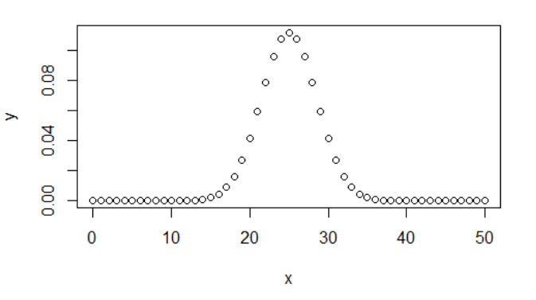
pbinom():此函数给出事件的累积概率。它是表示概率的单个值。
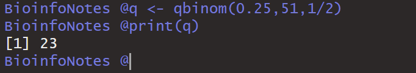
rbinom():该函数从给定样本产生给定概率的所需数量的随机值。
二项分布中的特殊分布：0-1 二项分布
应用场景举例：有100000条记录，从中选取65%的样本作为训练集，标记为1，，剩余35%的样本作为验证集，标记为0.
接下来介绍负二项分布。
负二项分布是统计学上一种离散概率分布。满足以下条件的称为负二项分布：实验包含一系列独立的实验， 每个实验都有成功、失败两种结果，成功的概率是恒定的，实验持续到r次不成功，r为正整数。Binomial分布和Negative Binomial分布，都是多次重复Bernoulli实验。Binomial关注的是，重复Bernoulli实验成功概率为p，条件为总共实验N次，随机变量为N次实验中成功实验次数k（k∈Z,k∈[0,N]），该随机变量的概率分布为Binomial分布。Negative Binomial关注的是，重复Bernoulli实验成功概率为p，条件为累计出现r次失败，随机变量为成功实验次数k（k∈Z,k∈[0,+∞)），该随机变量的概率分布为Negative Binomial分布。Binomial和Negative Binomial分布的随机变量都是成功实验次数，条件不同。从定义上来看，”负“可以理解为站在失败次数的角度看成功。
(4) 泊松分布¶
泊松分布（Poisson distribution），台译卜瓦松分布（法语：loi de Poisson，英语：Poisson distribution，译名有泊松分布、普阿松分布、卜瓦松分布、布瓦松分布、布阿松分布、波以松分布、卜氏分配等），是一种统计与概率学里常见到的离散机率分布（discrete probability distribution）。泊松分布是以18～19 世纪的法国数学家西莫恩·德尼·泊松（Siméon-Denis Poisson）命名的，他在1838年时发表。这个分布在更早些时候由贝努里家族的一个人描述过。泊松分布的概率函数为：
泊松分布的参数λ是单位时间（或单位面积）内随机事件的平均发生次数。 泊松分布适合于描述单位时间内随机事件发生的次数。当二项分布的n很大而p很小时，泊松分布可作为二项分布的近似，其中λ为np。通常当n≧20,p≦0.05时，就可以用泊松公式近似得计算。事实上，泊松分布正是由二项分布推导而来的。
在实际事例中，当一个随机事件，例如某电话交换台收到的呼叫、来到某公共汽车站的乘客、某放射性物质发射出的粒子、显微镜下某区域中的白血球等等，以固定的平均瞬时速率λ（或称密度）随机且独立地出现时，那么这个事件在单位时间（面积或体积）内出现的次数或个数就近似地服从泊松分布P(λ)。因此,泊松分布在管理科学、运筹学以及自然科学的某些问题中都占有重要的地位。（在早期学界认为人类行为是服从泊松分布，2005年在nature上发表的文章揭示了人类行为具有高度非均匀性。）。
R中有四个函数可用于泊松分布，分别是：
dpois(x,lambda)：返回发生x次随机事件的概率
ppois(q,lambda)：返回累积概率
qpois(p,lambda)：返回相应分位点x，详情见下面的例子
rpois(n,lambda)：返回每组发生随机事件的次数
这四个函数都有 lambda，对应于随机事件发生的平均次数λ。下面通过一个例子来了解如何使用它们：根据历史数据，某条河（比如：长江）100年平均要发生一次洪水，那么接下来的100年发生0次，1次和2次洪水的概率分别是多少呢？
分析：由于是过去很长时间的数据总结，因此可以认为这条河发生洪水的概率是稳定的，因此这条河发生洪水次数的概率服从泊松分布，且λ=1。
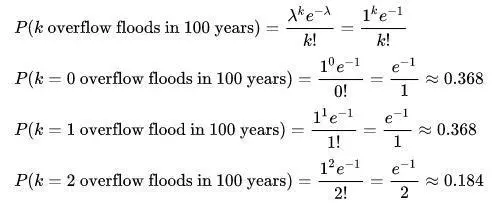
第一个问题：未来100年内，发生0次，1次和2次洪水的概率分别是多少？此时要用到 dpois(x,lambda)函数，其中 x参数指定发生的次数，函数返回相应概率，结果为：
第二个问题：至多发生1次洪水的概率是多少？此时要用到 ppois(q,lambda)函数，其中 q参数指定至多发生的次数（这里为1），函数返回相应累积概率，结果为：
第三个问题：90%概率下这条河至多能发生几次洪水？此时要用到 qpois(p,lambda)函数，其中 p参数指定概率（这里是0.9），函数返回相应分位点x(即F(x)≥0.9对应的最小x值)，结果为：
最后一个问题：重复10000组模拟，每组发生洪水的次数是多少？这时就要用到 rpois(n,lambda)函数，其中 n参数指定模拟的组数（这里为10000），函数返回每组发生的次数，结果为：
BioinfoNotes @set.seed(123)
BioinfoNotes @ns <- rpois(10000, 1)
BioinfoNotes @table(ns)
ns
0 1 2 3 4 5 6 7
3652 3757 1831 580 145 26 8 1
模拟1万组，3652组没有发生洪水，与理论上36.78%不发生洪水很接近。此外均值和方差也与理论值（λ=1）很接近。
(5) 正态分布¶
正态分布（Normal distribution），也称“常态分布”，又名高斯分布（Gaussian distribution），最早由棣莫弗（Abraham de Moivre）在求二项分布的渐近公式中得到。C.F.高斯在研究测量误差时从另一个角度导出了它。P.S.拉普拉斯和高斯研究了它的性质。是一个在数学、物理及工程等领域都非常重要的概率分布，在统计学的许多方面有着重大的影响力。正态曲线呈钟型，两头低，中间高，左右对称因其曲线呈钟形，因此人们又经常称之为钟形曲线。若随机变量X服从一个数学期望为μ、方差为σ2的正态分布，记为N(μ，σ2)。其概率密度函数为正态分布的期望值μ决定了其位置，其标准差σ决定了分布的幅度。当μ = 0,σ = 1时的正态分布是标准正态分布。
若随机变量 _X _服从一个位置参数为 μ、尺度参数为_σ _的概率分布，且其概率密度函数为：
则这个随机变量就称为正态随机变量，正态随机变量服从的分布就称为正态分布，记作
读作_X_服从 N(μ,σ__2)，或_X_服从正态分布。
当 μ=0,σ=1时，正态分布就成为标准正态分布。
在R中，用rnorm()函数来随机抽取正太分布随机数，只是抽取符合正态分布的随机数，就是中的x向量集合。
n 为产生随机值个数（长度），mean 是平均数， sd 是标准差 。使用该函数的时候后，一般要赋予它 3个值。rnorm()函数会随机正态分布，然后随机抽样或者取值 n 次。
dnorm为正态分布的概率密度函数，就是f(x)，也就是函数值。正态分布中某个满足正太分布变量x的出现概率，即正态分布概率函数。
pnorm()，Probability的缩写，表示概率函数。举个例子，标准正太分布从负无穷大到0的概率，可以用pnorm(0)计算，就是正太曲线跟x轴围成的面积。对f(x)在区域（x,y）上面的积分。
qnorm()， Quantile的缩写，表示分位函数。举个例子，如果知道标准正太分布从负无穷大到x的概率是0.9678，想要知道这个x的值，可以通过qnorm(0.9678)计算，其实就是对pnorm的逆解，对 pnorm函数求导的结果，得到概率所对应的分位数，即在x轴上围成区域面积所得概率的x域（x,y）的解。
(6) t分布¶
在概率论和统计学中，t-分布（t-distribution）用于根据小样本来估计呈正态分布且方差未知的总体的均值。如果总体方差已知（例如在样本数量足够多时），则应该用正态分布来估计总体均值。t分布曲线形态与n（确切地说与自由度df）大小有关。与标准正态分布曲线相比，自由度df越小，t分布曲线愈平坦，曲线中间愈低，曲线双侧尾部翘得愈高；自由度df愈大，t分布曲线愈接近正态分布曲线，当自由度df=∞时，t分布曲线为标准正态分布曲线。
(7) 卡方分布¶
若n个相互独立的随机变量ξ₁，ξ₂，...,ξn ，均服从标准正态分布（也称独立同分布于标准正态分布），则这n个服从标准正态分布的随机变量的平方和构成一新的随机变量，其分布规律称为卡方分布（chi-square distribution）。
二.R中的统计检验¶
1.假设检验¶
(1).用途：¶
验证我们的想法对不对。先对想法做一个假设，然后验证。如：研发新药，新药有没有效果。首先假设新药和老药效果一样，然后检验这一个假设。
(2).重要概念¶
a.假设
原假设：我们做出的假设，H0。 新药和老药效果一样。
备择假设：对原假设的否定，H1。新药和老药效果不一样。
b.两类错误
去真错误：原假设是正确的，但是我们做出的决定是拒绝原假设。
取伪错误：原假设是不正确的，我们却作出了接受原假设的决定。
c.差异是否有方向
单尾检验: 原假设A<=B,备择假设：A>B; 原假设：A>=B,备择假设：A<B.
双尾检验：原假设：A=B,备择假设：A~=B
d.p值: 原假设成立的概率值。
P<0.05: 原假设成立的可能性不足5%，此时拒绝原假设，接受备择假设。
p>=0.05: 原假设成立的可能性超过5%，我们没有充足的理由拒绝原价设，此时接受原假设。
(3).常用假设检验方法概述¶
在数据分析中，t检验和方差分析是最常用于组间差异比较的统计方法，但是条件也是比较难满足的：
- 随机样本；
- 正态分布；
- 方差齐性。
如果数据资料不满足这些条件，怎么办？
非参数检验（Nonparametric tests）可能就是一个比较好的方法。
对非正态分布数据，我们无法根据样本数据对总体分布的统计参数进行推断，可以用排秩（排序）的方法来规避不是正态分布的问题，用样本的排序情况来推断总体的分布情况。
(4). 检验方法的选择¶
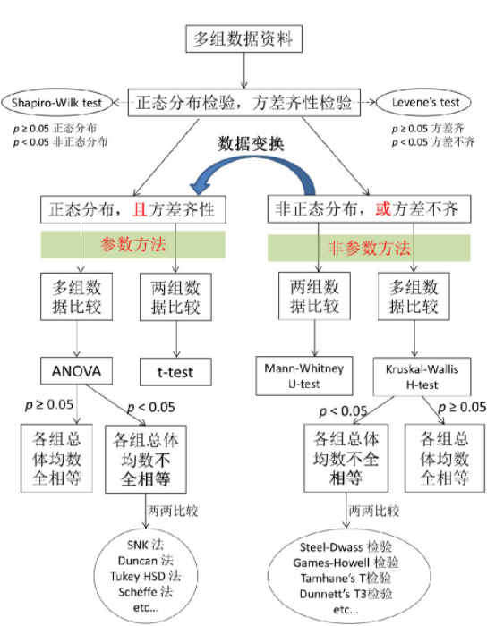
2.正态性和方差齐性检验¶
在做连续型资料的均数比较时，首先对样本数据做正态性和方差齐性检验，用以判断采用何种统计分析方法。我们先对样本数据做正态性和方差齐性检验。
(1).正态性检验¶
统计学中的t检验和方差分析等方法的应用条件是样本都来自正态总体或近似正态总体，只有符合这个条件，才能用这些方法来检验各样本所属的总体参数的差异显著性。下面介绍在R语言中检验正态性的几种方法：
a. Kolmogorov-Smirnov检验¶
K-S检验检验单一样本是否来自某一特定分布。比如检验一组数据是否为正态分布。它的检验方法是以样本数据的累积频数分布与特定理论分布比较，若两者间的差距很小，则推论该样本取自某特定分布族。需要注意的是：1）大样本、已知总体均数和标准差，选择非参数检验-单样本KS检验号；2）单样本K-S检验要求检验分布是连续的，而连续分布出现相同值的概率为0，如果是出现相同的，则连续分布的假设不成立，则该方法无法使用。K-S检验的原假设和备择假设为：
- H0:样本所来自的总体分布服从某特定分布
- H1:样本所来自的总体分布不服从某特定分布
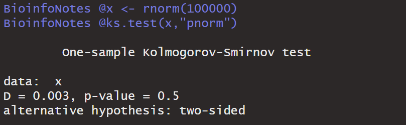
根据结果p-value > 0.05 ,接受原假设，即认为数据满足正态分布。
后面介绍的其它正态性检验方法，它们的原假设均为：数据分布满足正态分布，因此只要检验结果的p-value > 0.05,那么数据就是满足正态分布的。
b. 精确Kolmogorov-Smirnov检验¶
c. fBasics包里的ksnormtest()¶
d.fBasics包里的shapiroTest()¶
e. Shapiro-Wilk(W检验)¶
注意此种方法能够检验的样本大小必需在3和5000之间
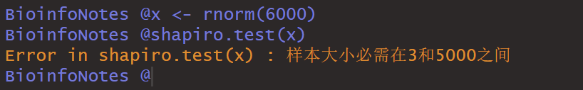
(2). 方差齐性检验¶
方差齐性是指不同组间的总体方差是一样的。那为什么方差分析的前提是要组间的总体方差保持一致呢？先想想方差分析是做什么呢？方差分析是用来比较多组之间均值是否存在显著差异。那如果方差不一致，也就意味着值的波动程度是不一样的，如果此时均值之间存在显著差异，不能够说明一定是不同组间处理带来的，有可能是大方差带来大的波动；如果方差一样，也就意味着值的波动程度是一样的，在相同波动程度下，直接去比较均值，如果均值之间存在显著差异，那么可以认为是不同组间处理带来的。
方差齐性检验是对两组样本的方差是否相同进行检验。检验思想与均值之间差异性检验是一样的。
a. 方差比¶
常用的方法有：方差比、Hartley检验、Levene检验、BF法、Bartlett检验。
方差比顾名思义就是两组方差的比，用较大一组的方差除较小一组的方差，最后得到一个F值，然后根据F值的大小来判断两组之间的方差是否相等。F值越大，则认为两组方差越不相等。
x <- rnorm(1000,2,1)
y <- rnorm(1000,1,1)
var.test(x,y,ratio = 1)
x <- rnorm(1000,2,1)
y <- rnorm(1000,2,0.5)
var.test(x,y,ratio = 1)
b. Hartley检验¶
Hartley检验与方差比的思想比较类似，差别在于Hartley检验用于多组方差的检验，用多组中最大的方差除最小的方差，得到一个F值，然后通过F值的判断来对方差齐性进行判断。
c. Bartlett检验¶
Bartlett检验的核心思想是通过求取不同组之间的卡方统计量，然后根据卡方统计量的值来判断组间方差是否相等。该方法极度依赖于数据是正态分布，如果数据非正态分布，则的出来的结果偏差很大。
require(graphics)
head(InsectSprays)
plot(count ~ spray, data = InsectSprays)
bartlett.test(InsectSprays$count, InsectSprays$spray)
bartlett.test(count ~ spray, data = InsectSprays)
d. Levene检验¶
Levene检验是将每个值先转换为为该值与其组内均值的偏离程度，然后再用转换后的偏离程度去做方差分析，即组间方差/组内方差。leveneTest函数包含于car程序包中。
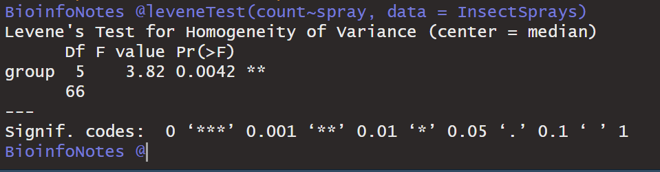
3. 单正态总体的检验¶
(1).方差已知，检验均值：Z检验¶
Z检验（Z Test）又叫U检验。由于实际问题中大多数随机变量服从或近似服从正态分布，U作为检验统计量与X的均值是等价的，且计算U的分位数或查相应的分布表比较方便。通过比较由样本观测值得到的U的观测值，可以判断数学期望的显著性，我们把这种利用服从标准正态分布统计量的检验方法成为U检验（U-test）。
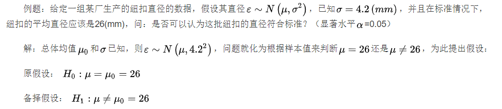
z.test():BSDA包，调用格式：
z.test(x, y = NULL, alternative = “two.sided”, mu = 0, sigma.x = NULL, sigma.y = NULL, conf.level = 0.95)
x，y为样本数据，单样本时忽略y；alternative选择检验类型；mu为检验的均值；sigma.x，sigma.y为标准差；conf.level为置信水平
(2).方差未知，检验均值：t检验¶
t检验，亦称student t检验（Student's t test），主要用于样本含量较小（例如n < 30），总体标准差σ未知的正态分布。 t检验是用t分布理论来推论差异发生的概率，从而比较两个平均数的差异是否显著。
t.test():调用格式：
t.test(x, y = NULL, alternative=c(“two sided”,“less”,“greater”), mu = 0,
paired = TRUE, var.equal = FALSE, conf.level = 0.95,…)
x，y为样本数据，单样本时忽略y；alternative选择检验类型；mu为检验的均值；paired设置是否为成对检验；var.equal设置双样本时方差是否相等；sigma.x，sigma.y为标准差；conf.level为置信水平
均值已知/未知，检验方差：卡方检验
4. 方差分析¶
(1) 方差分析中的基本概念¶
因素：对用户分组的依据，比如：药物A,药物B等不；
小鼠 |
药物A |
肿瘤重量(g) |
|---|---|---|
M1 |
浓度1 |
3.1 |
M2 |
浓度1 |
3.6 |
M3 |
浓度1 |
3.9 |
M4 |
浓度2 |
2.4 |
M5 |
浓度2 |
2.8 |
M6 |
浓度2 |
2.6 |
M7 |
浓度3 |
1.6 |
M8 |
浓度3 |
1.4 |
M9 |
浓度3 |
0.9 |
水平：因素的取值，比如：每种药物有不同浓度。
组内方差：同一水平下，观测值的方差。
如：药物A治疗方案下的小鼠，组1(M1,M2,M3)的肿瘤重量的方差。
组间方差:
不同水平下，各水平的均值的方差。衡量的是，不同组之间均值的差异。
3种浓度下治疗方案的均值（如浓度1，浓度2，浓度3条件下的均值）的方差，注意权重（组里面有几个观测值）。
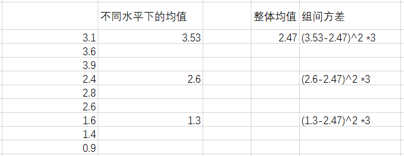
总方差：所有样本的总方差。总方差=组内方差+组间方差
方差分析的思想：
- 判断某个因素的各个水平下面，观测样本的均值是否相等。
- 在同一个水平下面的样本，在同一个组。
- 如果各组之间均值差别明显，那么组间方差就会很大，就会得到一个很小的P值。P值很小，代表各组的均值有明显差别。
(2) 单因素方差分析¶
aov()函数用法：aov(y~x,data)
其中的参数formula表示方差分析的公式，在单因素方差分析中即为X~A；data表示做方差分析的数据框；projections为逻辑值，表示是否返回预测结果；qr同样是逻辑值，表示是否返回QR分解结果，默认为TRUE；contrasts是公式中的一些因子的对比列表。通过summary()可列出分析表的详细结果。
aov()函数举例：multcomp包cholesterol数据
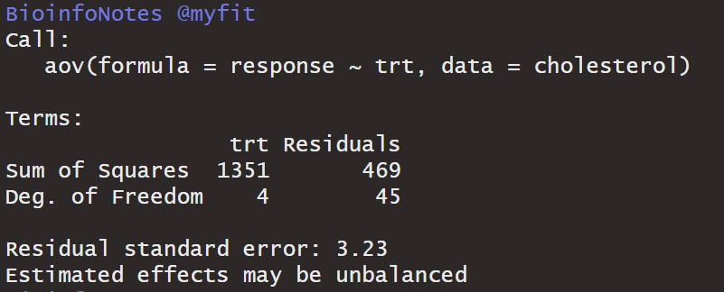
(3).多因素方差分析¶
y~A+B+A:B
aov()函数：A不做调整，B根据A做调整，A:B根据A和B做调整。
#双因素方差分析#
#以基础安装包中的ToothGrowth数据集为例，60只豚鼠，自变量包括两种投喂方法（橙汁或VC）,不同喂食方法中抗坏血酸含量有
#三种水平，牙齿长度为因变量，每种处理都被分配10只豚鼠。head(ToothGrowth)
fitt<-aov(len~supp*dose,data=ToothGrowth)
summary(fitt)
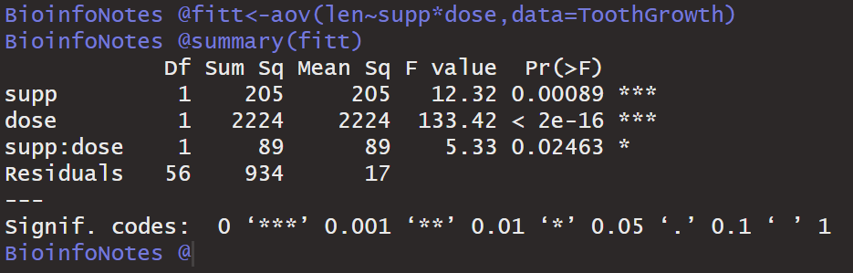
结果显示，不同喂食方法以及不同剂量对豚鼠牙齿生长影响显著，且喂食方法和不同剂量之间的交互作用非常显著。
5. 双正态总体检验¶
(1).方差已知，比较两总体均值：Z检验¶
z.test():BSDA包
(2).方差未知，且两方差相等/不等，比较均值：t检验¶
t.test(x, y = NULL, alternative=c(“two sided”,“less”,“greater”), mu = 0,
paired = TRUE, var.equal = FALSE, conf.level = 0.95,…)
配对样本t检验用于样品的两个相关组之间的比较手段。在这种情况下，同一样本有两个值（即一对值）。举个例子，在1个月内有20只小鼠接受了治疗X。我们想知道处理X是否会对小鼠的体重产生影响。为了回答这个问题，在治疗之前和之后测量了20只小鼠的体重。通过测量相同小鼠体重的两次，我们得到了治疗前的20组值和治疗后的20组值。在这种情况下，可以使用配对t检验比较治疗前后的平均体重。
# 治疗前小鼠体重
before <-c(15.4,25.3,25.6,34.7,28.8,18.9,30.0,36.7,25.8,27.7)
# 治疗后小鼠的体重
after <-c(32.5,23.4,36.7,35.7,38.7,32.5,32.4,37.0,26.7,30.0)
# 配对样本t检验
res <- t.test(after,before, paired = TRUE)
# 显示结果
res
##检验治疗后小鼠体重是否减小
t.test(after,before, paired = TRUE,alternative = "less")
##检验治疗后小鼠体重是否增加
t.test(after,before, paired = TRUE,alternative = "greater")
(3).两总体方差比较：F检验¶
F检验（F-test），最常用的别名叫做联合假设检验（英语：joint hypotheses test），此外也称方差比率检验、方差齐性检验。它是一种在零假设（null hypothesis, H0）之下，统计值服从F-分布的检验。其通常是用来分析用了超过一个参数的统计模型，以判断该模型中的全部或一部分参数是否适合用来估计母体。主要通过比较两组数据的方差，以确定他们的密度是否有显著性差异。至于两组数据之间是否存在系统误差，则在进行F检验并确定它们的密度没有显著性差异之后，再进行T检验。T检验用来检测数据的准确度（系统误差），F检验用来检测数据的精密度（偶然误差）。在定量分析过程中，常遇到两种情况：一种是样本测量的平均值与真值不一致；另一种是两组测量的平均值不一致。上述不一致是由于定量分析中的系统误差和偶然误差引起的，因此必须对两组分析结果的准确度或精密度是否存在显著性差异做出判断，两组数据的显著性检验顺序是先F检验后T检验。
T检验是检查两组均值的差异，而F检验是检查多组均值之间的差异。
通常的F检验例子包括：
- 假设一系列服从正态分布的母体，都有相同的标准差。这是最典型的F检验，该检验在方差分析（ANOVA）中也非常重要。
- 假设一个回归模型很好地符合其数据集要求，检验多元线性回归模型中被解释变量与解释变量之间线性关系在总体上是否显著。
在R中，利用函数var.test()实现:
x,y为样本数据；ratio为原假设的方差比值，进行两样本比较时可以使用默认值1；alternative设置检验类型为双尾或是单尾；conf.level为置信水平。
#(3).两总体方差比较：F检验
x <- rnorm(1000,2,1)
y <- rnorm(1000,1,1)
var.test(x,y,ratio = 1)
x <- rnorm(1000,2,1)
y <- rnorm(1000,2,0.5)
var.test(x,y,ratio = 1)
6.威尔科克森符号秩检验（Wilcoxon Signed Rank Test）¶
威尔科克森符号秩检验亦称威尔科克伦代符号的等级检验，是由威尔科克森（F·Wilcoxon）于1945年提出的。该方法是在成对观测数据的符号检验基础上发展起来的，比传统的单独用正负号的检验更加有效。
在Wilcoxon符号秩检验中，它把观测值和零假设的中心位置之差的绝对值的秩分别按照不同的符号相加作为其检验统计量。它适用于T检验中的成对比较，但并不要求成对数据之差di服从正态分布，只要求对称分布即可。检验成对观测数据之差是否来自均值为0的总体（产生数据的总体是否具有相同的均值）。
符号检验利用了观测值和零假设的中心位置之差的符号进行检验，但是它并没有利用这些差的大小（体现于差的绝对值大小）所包含的信息。因此，在符号检验中，每个观测值点相应的正号或负号仅仅代表了该点在中心位置的哪一边，而并没有表明该点距离中心的远近。如果把各观测值距离中心远近的信息考虑进去，自然比仅仅利用符号要更有效。这也是引进Wilcoxon符号秩检验的宗旨。
R语言实现.
x <- c(1.83, 0.50, 1.62, 2.48, 1.68, 1.88, 1.55, 3.06, 1.30)
y <- c(0.878, 0.647, 0.598, 2.05, 1.06, 1.29, 1.06, 3.14, 1.29)
wilcox.test(x, y, paired = TRUE, alternative = "greater")
wilcox.test(y - x, alternative = "less") # The same.
wilcox.test(y - x, alternative = "less",
exact = FALSE, correct = FALSE) # H&W large sample
7.比率检验:¶
(1).精确检验：二项分布检验¶
binom.test():
x为具有特征样本数，n为样本总数，p为检验的比率
(2).近似检验（样本量较大）：正态检验¶
prop.test():
prop.test(x, n, p = NULL, alternative = c(“two.sided”,“less”,“greater”),
conf.level = 0.95,correct = TRUE)
x为具有特征的样本数；n为样本总数；p设置假设检验的原假设比率值；alternative设置检验方式；conf.level为置信水平；correct设置是否使用Yates连续修正，默认为TRUE。
8.非参数检验¶
(1).总体分布的卡方检验:¶
chisq.test():
chisq.test(x, y = NULL, correct = TRUE, p = rep(1/length(x), length(x)),
rescale.p = FALSE, simulate.p.value = FALSE, B = 2000)
x是样本数据的向量或矩阵；y是与x长度相同的向量，当x时矩阵时忽略y；correct设置计算检验统计量时是否进行连续修正，默认为TRUE；p为原假设落在区间内的理论概率，默认为均匀分布，实际应用时需要自己构造分布函数后计算概率分布；rescale设置为TRUE时，概率之和不等于1时将报错们重新计算p，设置为FALSE时不作此要求；simulate.p.value设置为TRUE时采用仿真方法计算p值
(2).KS检验¶
x为数据向量；y可以为另一个数据向量，也可以是字符串作为分布名称指定一个分布（如pexp为指数分布，pnorm为正态分布），也可以是实际的累计分布函数，也可以是ecdf函数对象；“…”给出y分布指定的参数，alternative指定检验类型；exact指定P值是否应该被计算。
双样本时，检验x与y是否来自同一分布。
KS检验对数据的利用更完整，更稳健。
卡方检验主要用于分类数据，KS检验主要用于有计量单位的连续和定量数据。
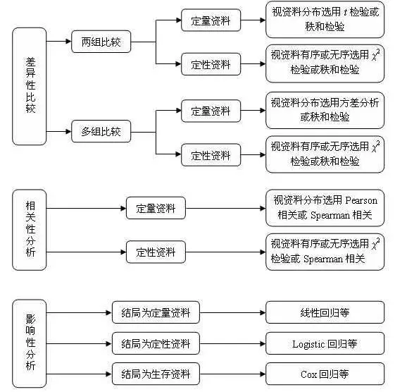
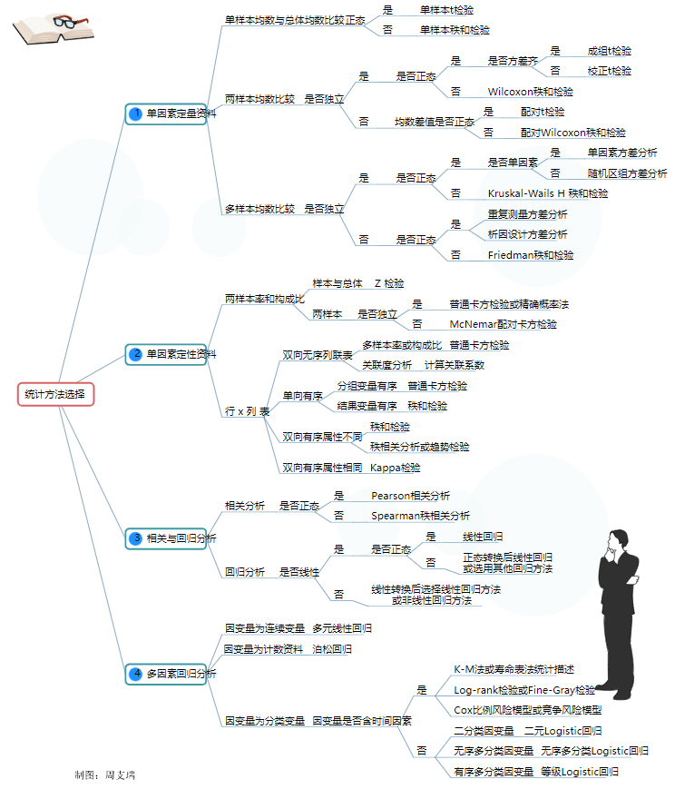
三.回归分析¶
研究医学变量间的关系时，可以利用相关性分析研究两变量之间的直线关系的方向和密切程度，同时，也可以采用回归分析研究变量在数值上的变化关系。
回归的现代解释：回归分析是研究某一变量（因变量）与另一个或多个变量（解释变量、自变量）之间的依存关系，用解释变量的已知值或固定值来估计或预测因变量的总体平均值。
1. 一元线性回归¶
一元线性回归是分析只有一个自变量（自变量x和因变量y）线性相关关系的方法。用途：解释两个变量之间的线性关系,如：癌症患者的生存期长短与与某基因的表达水平的关系。
(1) 重要概念：¶
自变量和因变量：自变量是指研究者主动操纵，而引起因变量发生变化的因素或条bai件，因此自变量被看作是因变量的原因。因变量也叫函数值。函数关系式中，某些特定的数会随另一个（或另几个）会变动的数的变动而变动，就称为因变量。自变量是被操纵的变量，而因变量是被测定或被记录的变量。也就是说自变量是“原因”，而因变量就是“结果”。
残差：残差在数理统计中是指实际观察值与估计值（拟合值）之间的差。
拟合优度:拟合优度（Goodness of Fit）是指回归直线对观测值的拟合程度。度量拟合优度的统计量是可决系数（亦称确定系数）R²。R²最大值为1。R²的值越接近1，说明回归直线对观测值的拟合程度越好；反之，R²的值越小，说明回归直线对观测值的拟合程度越差。通常在0.85以上。
截距项和趋势项：自变量取值为0时，因变量的取值。回归方程中Y为应变量，X为自变量，方程的解为Y = A*X + B ，这里B就为截距项，A就为趋势项。
AIC信息准则：即Akaike information criterion是衡量统计模型拟合优良性(Goodness of fit)的一种标准，由于它为日本统计学家赤池弘次创立和发展的，因此又称赤池信息量准则。它建立在熵的概念基础上，可以权衡所估计模型的复杂度和此模型拟合数据的优良性。
(2) R语言实现¶
R中回归分析用lm函数：
lm(formula, data, subset, weights, na.action,
method = "qr", model = TRUE, x = FALSE, y = FALSE, qr = TRUE,
singular.ok = TRUE, contrasts = NULL, offset, ...)
formula回归分析中，自变量与因变量的关系公式，如一元回归：y~x。
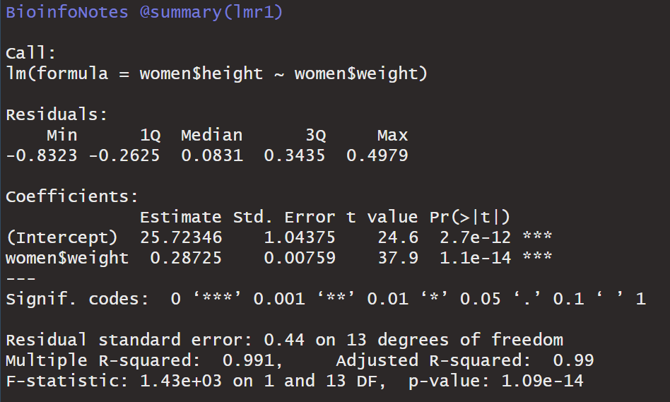
Intercept就是截距项，Multiple R-squared是拟合优度，Adjusted R-squared是校正后的拟合优度。
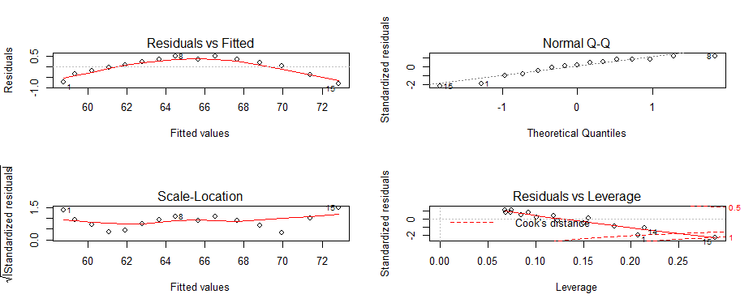
左上图：残差与拟合图，理论上散点应该散乱的分布在横线两侧，但是此图明显有一个曲线关系，说明我们的模型需要加入一个二次项（这一点从散点图亦可以看出来）。
右上图：正太Q-Q图，用于检验因变量的正态分布性，若服从正态分布，则散点应分布在一条直线上，此图满足表明满足正态性假设。
左下图：齐方差检验，若满足其方差，则散点在水平线周围随机分布，此图满足齐方差检验。
右下图：独立性检验，即一个样本是否会影响另一个样本，我们的样本数据似乎并不存在这样的问题。
2.多元线性回归¶
在回归分析中，如果有两个或两个以上的自变量，就称为多元回归。事实上，一种现象常常是与多个因素相联系的，由多个自变量的最优组合共同来预测或估计因变量，比只用一个自变量进行预测或估计更有效，更符合实际。因此多元线性回归比一元线性回归的实用意义更大。
含义：一个因变量，多个自变量之间的线性关系。
R语言实现：与一元回归一样，同样是用lm函数，一元回归formula：yx。多元回归就是yx+z+r，用加好链接回归变量，如：
(1) 多重共线性¶
多重共线性是指线性回归模型中的解释变量之间由于存在精确相关关系或高度相关关系而使模型估计失真或难以估计准确。对线性回归模型
基本假设之一是自变量，_ X1,X2,...,Xp_之间不存在严格的线性关系。如不然，则会对回归参数估计带来严重影响。
如何理解多重共线性？
肿瘤组织中CD8+T 细胞的数量Y与肿瘤组织中P53，Ptpn14，PTEN基因的表达量之间有关系。只考虑单因素(某个基因），也就是一元回归。可以简单写成：Y = AP53 + ε ; Y = BPtpn14 + ε；Y = C*PTEN + ε
如果把3个基因都带入，多元线性回归就写成如下：
Y = aP53 + bPtpn14 + c*EGFR
如果这三个基因直接存在某种线性关系，那么abc这三个系数就很难确定。这也就是多个自变量之间存在强相关，使得某些变量的系数解释起来困难。我们看一个案例：
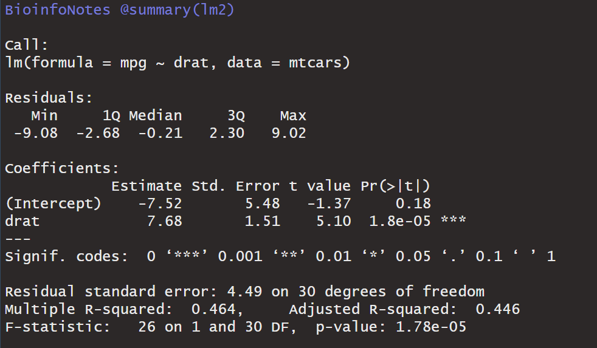
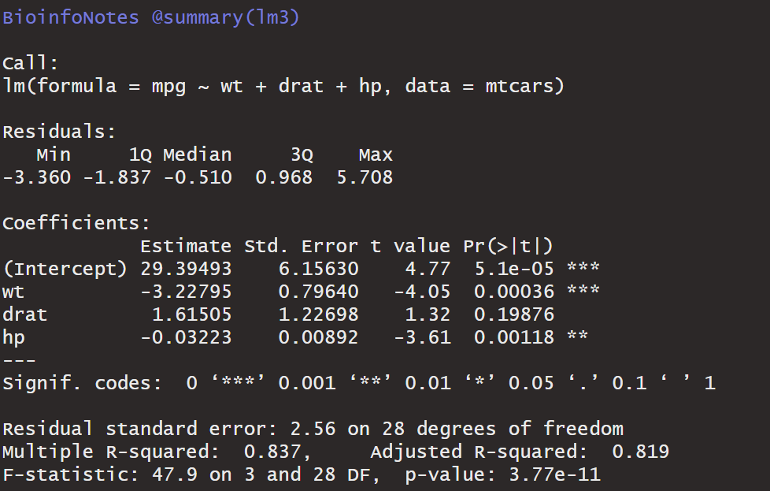
上面的案例我们可以看出，一元回归中，mpg与drat是显著相关的，但考虑多元回归，受到变量wt和hp的影响，就不相关了。
(2) 多重共线性的解决方法：¶
- **删除掉存在多重共线性的变量**
- **全子集回归 (不建议使用）**
lm(mpg~wt+drat+hp,data=mtcars)
lm(mpg~wt+drat,data=mtcars)
lm(mpg~drat+hp,data=mtcars)
lm(mpg~wt+hp,data=mtcars)
lm(mpg~wt,data=mtcars)
lm(mpg~drat,data=mtcars)
lm(mpg~hp,data=mtcars)
也就是将drat，wt和hp所有排列组合都去做线性回归，最后选择最好的回归模型。如果变量多，会带来麻烦。不建议使用。
- **逐步回归（常使用）**
前向回归：每次添加一个预测变量到模型中，一直到模型不再改进为止。
后向回归：最初所有的变量全放入模型中，然后每次删除一个变量，一直到会降低模型的质量为止。
逐步回归：结合了前向回归和后向回归，每次进入一个变量，然后对模型进行评价，对模型没有贡献的变量会被删除，直到获得最有模型为止。
(3) 逐步回归¶
逐步回归的方法用MASS包中的stepAIC()函数。
stepAIC(object, scope, scale = 0,
direction = c("both", "backward", "forward"),
trace = 1, keep = NULL, steps = 1000, use.start = FALSE,
k = 2, ...)
object:是模型对象；
direction：这个参数，是选择前向回归（"forward"）、后向回归（"backward"）或者两种同时进行（"both"），
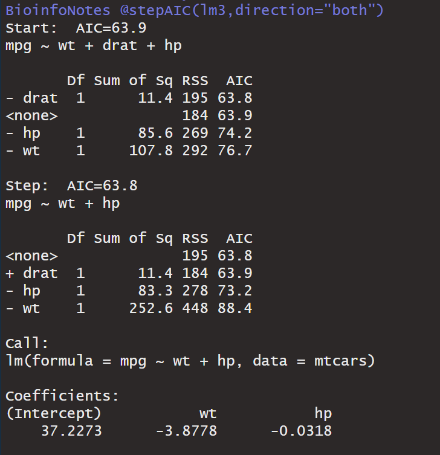
得到最好的模型：
此外,R语言中用于实现逐步回归的函数还有step()，函数的基本书写格式为:
step(object, scope, scale= 0,direction=c("both", "backward", "forward"),trace= 1, keep = NULL, steps = 1000, k=2, ...)
参数介绍:
Object:指定模型的对象，如模型lm;
Scope:指定变量选择的上下界，下界为需要出现在最终模型中的变量组，上界为所有考虑添加到模型中的变量组，若只设置一个公式，则R语言默认其为上界，若需同时设定上下界，则需设置两个公式；
Scale:回归模型和方差分析模型中定义的AIC所需要的值；
Direction:指定变量被添加、移除到模型中或者两者均进行，"forward"即向前法，表示变量被添加，“backward”即向后法，表示变量被移除，“both"表示两者均进行，默认值为“both"；
Trace: 指定是否输出变量选择过程，“0”表示不输出，“I”表示输出，默认值为I;
Keep: 选择从对象中保留的参数的函数，默认值为NULL:
Steps: 指定算法终止的最大迭代次数，默认值为1000;
K:惩罚计算中自由度的倍数，默认值为2。
swiss数据集共有47行观测值，每行有7个变量。
模拟练习的话，阅读文章：第4章:回归分析(3)——变量的选择
3.非线性回归¶
在处理许多实际问题时，变量间的关系并非直线关系,例如细菌生长曲线、药物动力学、毒物剂量与动物死亡率的关系等等。此时，若采用线性回归分析将丢失大量信息,甚至得出错误结论。因此，就需要我们采用非线性回归模型来处理此类问题。非线性回归是回归函数关于未知回归系数具有非线性结构的回归。简单来说就是自变量和因变量之间的关系不能用线性方程表示。常用的处理方法有回归函数的线性迭代法、分段回归法、迭代最小二乘法等。非线性回归分析的主要内容与线性回归分析相似。非线性回归有多种形式，包括双曲线、二次曲线、三次曲线、幂函数曲线、指数函数曲线、S形曲线、对数曲线、指数曲线等。非线性回归分析的关键是确定函数的具体形式。通常需要根据科学研究或生产实际中的具体问题或试验数据的特征做出合适的选择。
自变量和因变量之间的关系不能用线性方程表示，比如指数，对数关系都属于非线性回归。
- y=x^3
- y=exp(x)
- y=x+x^2+x^3
(1) 常见的非线性回归¶
多项式回归：回归函数是回归变量多项式的回归。多项式回归模型是线性回归模型的一种，此时回归函数关于回归系数是线性的。由于任一函数都可以用多项式逼近，因此多项式回归有着广泛应用。比如物理学中匀加速直线运动中，路程s与时间t的关系 ：S=V0t+(at^2)/2
指数回归: 如细菌的增殖曲线，细菌数量n与时间t之间的关系简单点就是n=a<sup>t</sup>。
Logistic回归：数据挖掘里面的一种最基本的分类算法【后面介绍】。
(2).非线性回归求解¶
其思想是对数据进行各种转化，将非线性关系转换成线性关系，然后用线性回归求解。比如，n = xt ，我们可以把两边取对数，ln(n) = t*ln(x), 这样我们就知道ln(n)和t之间是线性关系。除了取对数，还可以平方、开根号、三次方等，最终的目的还是转换成线性模型。
4.Logistic回归¶
logistic回归又称logistic回归分析，是一种广义的线性回归分析模型，常用于数据挖掘，疾病自动诊断，经济预测等领域。例如，探讨引发疾病的危险因素，并根据危险因素预测疾病发生的概率等。以胃癌病情分析为例，选择两组人群，一组是胃癌组，一组是非胃癌组，两组人群必定具有不同的体征与生活方式等。因此因变量就为是否胃癌，值为“是”或“否”，自变量就可以包括很多了，如年龄、性别、饮食习惯、幽门螺杆菌感染等。自变量既可以是连续的，也可以是分类的。然后通过logistic回归分析，可以得到自变量的权重，从而可以大致了解到底哪些因素是胃癌的危险因素。同时根据该权值可以根据危险因素预测一个人患癌症的可能性。应用场景：二因素变量的预测，如某药物治疗某种疾病是否有效/缓解
(1).逻辑回归与普通回归的区别：¶
普通回归：因变量是连续属性的值，
逻辑回归：因变量要么是0，要么是1。
(2) 原理¶
我们通过鸢尾花这个数据集iris来讲解，物种有三种，setosa，versicolor和virginica ，我们只要后面这2种。我们是否可以根据我们是否可以根据萼片和花瓣的长宽来判断是versicolor还是virginica，virginica 的替换为1,versicolor为0，逻辑回归分析首先根据4个参数（萼片和花瓣的长宽）进行分组，并且保证每一个组的4个参数值接近，相差不大。接下来就是对因变量进行变换，也称逻辑变换，假如某一组中有10个数据，3个versicolor，7个virginica，所占比例分别是0.3和0.7，,逻辑转换值是ln(0.7/0.3)，经过逻辑转换后，因变量就不在是0或者1，而是连续型变量，如果数据分为20组，那么就最后就有20行的数据。4组参数的值取该组的均值。然后就可以进行回归分析了。
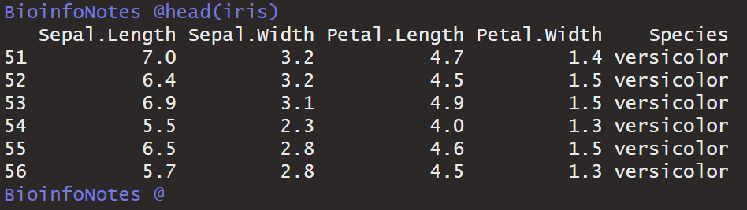
ln(p(virginica)/(1-p(virginica)))=a0 + a1Sepal.Length + a2Sepal.Width + a3Petal.Length +a4Petal.Width
(2).R语言实现¶
R语言中用于实现logistic回归的函数是glm()，其基本书写格式为:
glm(formula, family = gaussian, data, weights, subset,
na.action, start = NULL, etastart, mustart, offset,
control = list(...), model = TRUE, method = "glm.fit",
x = FALSE, y = TRUE, singular.ok = TRUE, contrasts = NULL, ...)
参数介绍:
Formula:指定用于拟合的模型公式，类似于Im中的用法:
Family: 指定描述干扰项的概率分 布和模型的连接函数， 默认值为gaussian, 若需进行logistic同归，则需设置为binomial(link = "logit");
Data:指定用于回归的数据对象，可以是数据框、列表或能被强制转换为数据框的数据对象:
Weights:一个向量，用于指定每个观测值的权重:
Subset:一个向量，指定数据中需要包含在模型中的观测值;
Na.ction:一个函数，指定当数据中存在缺失值时的处理办法，用法与Im中的一致;
Start:一个数值型向量，用于指定现行预测器中参数的初始值;
Etastart:一个数值型向量，用于指定现行预测器的初始值;
Mustart:一个数值型向量，用于指定均值向量的初始值:
Offset:指定用于添加到线性项中的一组系数恒为1的项:
Contol:指定控制拟合过程的参数列表，其中epsilon 表示收敛的容忍度，maxit表示迭代的最大次数，trace 表示每次迭代是否打印具体信息；
Model: 逻辑值，指定是否返回“模型框架”，默认值为TRUE:
Method;指定用于拟合的方法，“glm.ft”表示用于拟合，“model.frame"表示可以返回模型框架；
X:逻辑值，指定是否返回“横型矩阵”，默认值为FALSE:
Y:逻辑值，制度是否能够返回响应变量，默认值为TRUE;
Contrasts:模型中因子对照的列表。
下面利用iris 数据集进行操作演练，由于iris数据集中的分类变量Specics中有三种元素:setosa、versicolor 和virginica，即鸢尾花的有三个不同的种类，在建模之前，先对数据集进行处理，将数据集中Species属于setosa类的数据剔除，然后利用剩余的数据进行建模分析，具体操作如下:
iris<-iris[51:150,]
head(iris)
iris$Species<-ifelse(iris$Species=="virginica",1,0)
log1<-glm(Species~.,family=binomial(link='logit'),data=iris)
summary(log1)
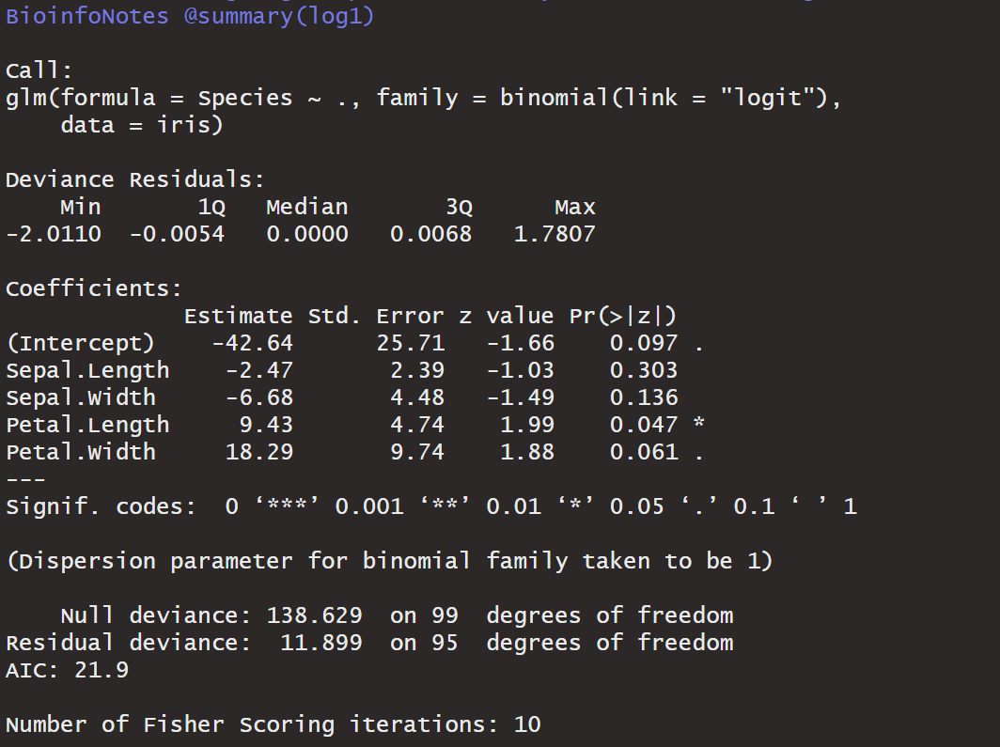
上述代码表示:选择iris数据集中第51行到150行的数据，将该数据集中变量Species列中记录为virginica 的替换为1,否则替换为0，然后利用清洗好的数据进行logistic回归；模型的输出结果显示:解释变量Sepal.Length和Sepal.Width没能通过显著性水平为0.05的检验。因此，我们可以通过逐步回归分析后选择合适的变量。再回过来进行重新建立模型。step进行逐步回归，阅读文章：第4章:回归分析(4)——logistic回归。
5.Poisson回归分析¶
(1) 用途¶
稀有事件的发生次数，常服从Poisson分布。如某病患者术后并发症发生次数、某病患者达到临床缓解所需的治疗次数、某病患者在一年内住院次数等，这些都是通过计数得到的资料，而且发病率低，这类事件的发生常服从Poisson分布。分析这类事件的影响因素，需要用到Poisson回归。Poisson回归主要用于单位时间、单位面积、单位空间内某事件的发生数的影响因素分析。
(2) 适用条件¶
Poisson回归要求事件的发生是独立的，如果事件发生是不独立的，如传染病，则需要考虑负二项回归。在满足事件独立性外，还需要考察计数资料的均值是否等于方差，是否可采用Poisson回归。
(3) R语言实现¶
Poisson回归分析，与逻辑回归一样，用的也是glm()函数，将参数Family设置为poisson。
library(robust)
data(breslow.dat)
str(breslow.dat)
breslow <- breslow.dat[, 6:9]
summary(breslow)
hist(breslow$Ysum,
breaks = 20,
xlab = "Seizure Count",
main="Distribution of Seizure")
fit <- glm(Ysum ~ Base + Age + Trt, data = breslow.dat, family = poisson)
summary(fit)
coef(fit)##提取模型系数
exp(coef(fit))
exp(confint(fit))
library(epiDisplay)
idr.display(fit)
write.csv(idr.display(fit)$table, file = "poisson.csv")
(4) 过度离散的判断即处理¶
qcc包提供了对poisson回归模型过度离散的检验方法。显著性检验的p值很小，表明存在过度离散，处理qcc包，epiDisplay包里面的函数poisgof()对模型进行拟合优度检验。拟合优度检验的p值很小，表明模型拟合得较差，poisson回归的假设条件很可能不满足，即存在过度离散等问题。解决办法：一种是实验拟合poisson回归，另一种是指定误差项服从负二项分布。，使用负二项回归。这2种模型的结果的介绍与poisson回归类似，建立你poisson回归模型只需要将glm()函数的Family设置为quasipoisson。
library(qcc)
qcc.overdispersion.test(breslow$Ysum, type = "poisson")
poisgof(fit)
fit.od <- glm(Ysum ~ Base + Age + Trt,
family = quasipoisson,
data = breslow)
summary(fit.od)
fit.nb <- glm.nb(Ysum ~ Base + Age + Trt, data = breslow)
summary(fit.nb)
poisgof(fit.nb)
AIC(fit, fit.nb)
四.生存分析与Cox回归模型¶
1.生存分析¶
生存分析处理预测特定事件将要发生的时间。它也被称为故障时间分析或分析死亡时间。例如，预测患有癌症的人将存活的天数等。
对于生存率的估计常用的是Kaplan-Meier曲线，其基本原理是先求出存活一定时期的对象再活过下一时期的概率，即生存概率，然后根据概率的乘法定理将逐个生存概率连续相乘，从而得到从一开始活到一定时间的概率，即生存率。命名为survival的R语言包用于进行生存分析。此包包含函数Surv（），它将输入数据作为R语言公式，并在选择的变量中创建一个生存对象用于分析。然后我们使用函数survfit()创建一个分析图。
下面是基于R语言实现生存分析：
###------------------------生存分析----------------
#生存对象
library(survival)
data(ovarian)
str(ovarian)
ovarian$resid.ds <- factor(ovarian$resid.ds,
levels = c(1, 2),
labels = c("no", "yes"))
ovarian$rx <- factor(ovarian$rx,
levels = c(1, 2),
labels = c("A", "B"))
ovarian$ecog.ps <- factor(ovarian$ecog.ps,
levels = c("1", "2"),
labels = c("good", "bad"))
hist(ovarian$age)
ovarian$agegr <- cut(ovarian$age,
breaks = c(0, 50, 75),
labels = c("<=50", ">50"))
table(ovarian$agegr)
#建立生存对象
surv.obj <- Surv(time = ovarian$futime, event = ovarian$fustat)
surv.obj
##生存率的估计与生存曲线
survfit(surv.obj ~ 1)
surv.all <- survfit(surv.obj ~ 1)
summary(surv.all)
summary(surv.all, censored = TRUE)
plot(surv.all, mark.time = TRUE)
abline(h = .5, lty = 2, col = "red")
#生存率的比较
surv.treat <- survfit(surv.obj ~ rx, data = ovarian)
summary(surv.treat)
plot(surv.treat, mark.time = T, conf.int = TRUE,
lty = c(1, 2), col = c("blue", "red"))
legend(60, .3, legend = c("A", "B"),
lty = c(1, 2), col = c("blue", "red"))
library(survminer)
ggsurvplot(surv.treat, data = ovarian, pval = TRUE)
survdiff(surv.obj ~ rx, data = ovarian)
2.Cox回归¶
(1).概述¶
COX回归模型，又称“比例风险回归模型（proportional hazards model，简称Cox模型）”，是由英国统计学家D.R.Cox(1972)年提出的一种半参数回归模型。该模型以生存结局和生存时间为因变量，可同时分析众多因素对生存期的影响，能分析带有截尾生存时间的资料，且不要求估计资料的生存分布类型。由于上述优良性质，该模型自问世以来，在医学随访研究中得到广泛的应用，是迄今生存分析中应用最多的多因素分析方法。从分析的因素上看，有单因素分析和多因素分析。正如连续资料的单因素分析常用t检验、方差分析，对应的多因素分析是多重线性回归，分类资料的单因素分析方法卡方分析，对应的多因素分析有logistic回归，生存分析的常用单因素（或少数因素）的分析有Life Tables法、Kaplan-Meier法，对应的多因素模型则常用Cox回归模型（Cox风险比例模型）。从采取的分析方法上看，生存分析有非参数法（如Wilcoxon法、Log-rank法）、参数法（如Weibull回归、lognormal回归等）和半参数分析（Cox回归）。Cox回归要求满足比例风险假定（proportional-hazards assumption）的前提条件。所谓比例风险假定，就是假定风险比（HR，Hazard Ratio）不随时间t变化而变化。在进行生存分析前，你最好对以下的一些概念及其意义有所了解：起始事件、失效事件（Failure Event）/终点事件（Endpoint Event）、生存时间（Survival Time）/失效时间（Failure Time）、中位生存时间（Median Survival Time）、平均生存时间（Mean Survival Time）、删失值/截尾值（censored values）、生存概率（Survival Probability）、生存率（Survival Rate）/积累生存概率/生存函数/积累生存函数（Cumulative Survival Function）、风险函数（Hazard Function）、累积风险函数……风险函数h(t)=概率密度函数f(t)/生存函数S(t)，概率密度函数f(t)为累积分布函数F(t)的导数，而F(t)=1-S(t)。
(2).建立cox回归模型¶
cox1 <- coxph(surv.obj ~ rx + resid.ds + agegr + ecog.ps,
data = ovarian)
summary(cox1)
drop1(cox1, test = "Chisq")
cox2 <- coxph(surv.obj ~ rx + resid.ds + agegr, data = ovarian)
step.cox <- step(cox1)
cox.zph(cox2)##比例风险假定的检验
summary(cox2)
newdata <- data.frame(rx = c("A" , "B"),
resid.ds = c("no", "no"),
agegr = c(">50", ">50"))
newdata
hr <- predict(cox2, newdata = newdata, type = "risk")
hr
hr[1]/hr[2]
cox.fit <- survfit(cox2, newdata = newdata, type = "kaplan-meier")
plot(cox.fit, lty = c(1, 2), col = c(2, 4))
title(main="Cox survival curves by treatment
for age > 50, no residual disease patients",
xlab="Duration in days",
ylab="Survival probability",
las = 1)
legend(5, 0.3, c("Treatment A", "Treatment B"),
lty = c(1, 2), col = c(2, 4))
五.相关性分析¶
1.概述¶
在医学研究过程中，除了检验不同组的数据之间是否存在差异之外，还常需要用到相关性分析，用于分析两个变量之间是否存在关联、关联的方向以及关联的强度。如空腹血糖与胰岛素的关系，患者血药浓度与时间的关系等等。进行相关性分析，需要理解相关性，相关性可以显示两个变量是否相关以及如何相关。例如，身高和体重是相关的; 较高的人往往有更大的体重。那么这种关系就是正相关。那么再例如汽车排量与每升汽油的里程，是负相关的，汽车排量越大，每升汽油跑的里程就越短。尽管这种相关性非常明显，但您的数据可能包含未预料到的相关性。您可能还会产生怀疑，怀疑两个变量之间是否存在相关性，或者不知道两者之间的依赖和联系程度。这个时候，就需要一种可以量化的指数分析。相关分析可以帮助我们更好地理解数据。但是，使用相关性分析的时候，我们需要记住的一个关键事项是：永远不要假设相关性就一定意味着A变量的变化会导致B变量的变化。多年来个人电脑和运动鞋的销售都急剧增长，并且它们之间存在高度相关性，但你不能认为购买电脑会导致人们购买运动鞋（反之亦然）。但可能还是可能存在相同的调节因素，比如社会生产力的提高和经济状况的改善。另外，在进行相关分析时，需要根据数据的类型和分布特征选择合适的相关系数，对于两连续型正态分布的资料，选择Pearson相关系数；等级资料或不满足正态分布的变量，应当选择Spearman相关系数；对于有序分类变量，应当选择Kendall相关系数。
2.pearson相关系数¶
算法如下：
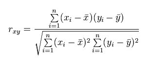
代数算法比较难理解，但分子我们可以看到是个协方差，只是少了除以n-1，而分母是我们很熟悉的标准差，同样少了除以n-1。可以看出分子分母都少了除以n-1，正好抵消。也就意味相关性系数就是协方差除以标准差。
甚至我们可以写成：
其中cov既是协方差的缩写，也是R中的函数名称。如果想了解这个计公式，我们还要分为三个部分。
(1)协方差¶
可以通俗地理解为：两个变量在变化过程中的变化方向是否一致，以及一致的程度。
如果两个变量，A变大，同时B也变大，说明两个变量是同向变化的，这时协方差就是正的。A变大，同时B变小，说明两个变量是反向变化的，这时协方差就是负的。从数值来看，协方差的数值越大，两个变量同向程度也就越大。反之亦然。公式：
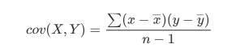
如果有X,Y两个变量，每个时刻的“X值与其均值之差”乘以“Y值与其均值之差”得到一个乘积，再对这每时刻的乘积进行求和并求出均值。
首先x减去平均值，就意味着我们将平均值作为一个坐标原点。减去平均值，就意味着，所有的x的取值都会根据这个原点，重新调整数值（位置）。这样我们就可以得到Xn（n = 1，2，3，，，）的变化程度。也就是距离原点的距离远近，这是在x变量中的变化程度。那么同样y变量中也做这样的取值，得到Yn在Y变量中的变化程度。如果Xn与Yn变化一致。那么要是Xn大于均值，那么X -Xn就是正数，Yn也是同样的，因此这个数是正数。将n依次取每个值，就可以算出X变量与Y变量之间的每个取值时的变化协同性。
以上是理想状态下，实际中，就算X变量与Y变量之间存在协同性，也可能出现这种情况：例如，在某个取值的时候，例如当n=2时候，X2-mean(x)< 0，而Y2-mean(Y)> 0。但因为我们是计算每一个取值时的计算结果，最终算一个求和。所以如果X和Y变量存在协同性，那么最终的结果还是为正数。
当然如果x变量与y变量反向相关，计算的结果为负数，代表负相关。
当然，你可能还会想，n = 1，n = 2，n = 3…，每个时刻X，Y都在增大，而且X都比均值大，Y都比均值小，这种情况协方差不就是负的了？7个负值求平均肯定是负值啊？也就是负相关。
但是X，Y都是增大的，明明同向变化的，这不就矛盾了？当然不矛盾，因为这种情况是不可能的。Xn和Yn减去的是均值。均值既然就意味这肯定有低于均值的Xn和Yn啊。所以结果一定是有正有负，看最后加和后，哪方更胜一筹。
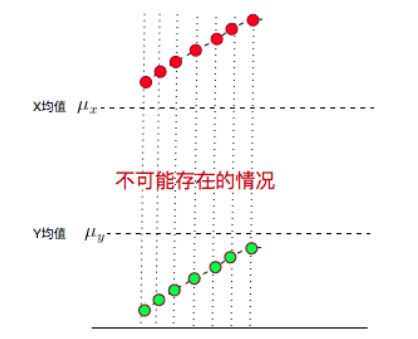
这里，我们知道了协方差是可以衡量两个变量之间的协同变化程度的。
(2)标准差¶
标准差，是我们较常遇见的。不论是高中的数学课本，还是后面大学和工作遇到的变异系数，T检验等统计检验值都是需要标准差的。为什么标准差在统计中用到的这么多？
标准差可以衡量数据的分布状况，公式：
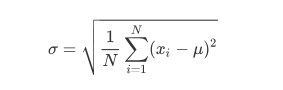
从公式可以看出，标准差计算方法为，每一时刻变量值与变量均值之差再平方，求得一个数值，再将每一时刻这个数值相加后求平均，再开方。其中Xi - u同样是以平均值为原点，某一时刻下数值偏离的程度。 取平方值，是因为这个偏离程度有正有负，如果想累加每一个时刻的偏离程度，需要取一个绝对值，平方是最好的绝对值的方法。
这样累加后，我们就可以得到x变量中数据的整体偏离中心原点的程度。然后我们还需要除以观察时刻的总数，以抵消因为观察次数不同而产生的影响。因为观察次数越多，求和值肯定越大，所以要除以N。
还没完，因为我们平方取值，所以还需要开平方。
这里我们可以看到：
标准差得到的，是变量中数据的分散程度
(3) 相关性系数¶
根据上述，我们知道了协方差可以获得两个变量之间的协同变化程度，标准差可以知道变量的变化范围。
协方差虽然可以衡量变化程度，但是还缺少一个统一的量纲，否则不能进行比较。例如：
sunglass <- c(213,233,296,345,645,644,492,691,790,667,645,546,506,524,434,383,282,181,30,50,30)
icecream <- c(215,236,300,350,651,651,500,700,800,678,657,559,520,539,450,400,300,200,50,30,50)
cov(sunglass,icecream)
p1 <- qplot(sunglass,icecream)
p2 <- qplot(((sunglass)*0.01), ((icecream)*0.01))
cowplot::plot_grid(p1,p2,nrow = 1,labels = c("p1","p2"),hjust = 0.05)
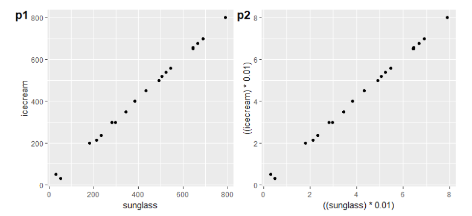
发现问题了吧，明明icecream和sunglass之间是一样的变化协同程度，但因为波动范围的取值大小，就导致了cov(sunglass,icecream)是54091，而cov(((sunglass)0.01), ((icecream)0.01))就变成了5.4091。
但是明明趋势和相关性程度是一致的，这就意味着协方差没有考虑原始数据的分布范围。因此我们还需要将这个值数放在一个量纲下，最好的量纲就是自己的原始数据分布情况。
这不正好需要标准差吗。因此相关性系数的计算就是协方差/标准差:
3.spearman相关性系数¶
与Pearson相关系数相关，Spearman相关系数测量两个变量之间的关系。Spearman可以理解为Pearson相关系数的基于等级的版本，可以用于非正态分布且具有非线性关系的变量。此外，它不仅可用于连续数据，还可用于序数属性的分析。
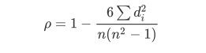
是不是感觉有点蒙圈，但其实不难。spearman最大的差别在于，它不是根据原始数值来计算相关性，而是根据排序。
假设两个随机变量分别为X、Y，它们的元素个数均为N，两个随机变量取的第i（1<=i<=N）个值分别用Xi、Yi表示。对X、Y进行排序（同时为升序或降序），得到两个元素排行集合x、y，其中元素xi、yi分别为Xi在X中的排行以及Yi在Y中的排行。将集合x、y中的元素对应相减得到一个排行差分集合d，其中di=xi-yi。
注意区分X和Y的大小写。
我们知道了排名后，其实计算公式还是person那套算法
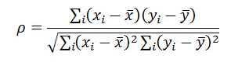
但是我们也可以发现，直接计算排名，对那些非线性的相关性就会非常友好了。此外，还可以适用于非正态分布的数据。但作用也是有限的，不信你试试。
所以至于选择spearman还是选择pearson来计算相关性，这个还要结合数据来说话。因此推荐先用pearson来计算，如果结果不好，就可以试试spearman。
4.Kendall相似性¶
和Spearman相关系数类似，Kendall计算排序变量之间的依赖关系，同样适用非正态分布数据。Kendall 可以计算连续数据和有序数据。Kendall在已有排名变量的背景下，通过对错位的强烈惩罚来区别于Spearman的。公式如下：
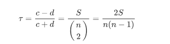
就是如果Xi与Yi的排序是一致的，就会得分，不一致就会减分。
5.分析案例¶
R语言中利用cor函数进行相关性分析。
cor函数可计算三种相关性系数：pearson,kendall和spearman,默认是pearson。pearson是参数检验，需要两个向量均服从正态分布。另外两个为非参数检验。
相关系数的显著性检验用cor.test函数，其中alternative参数，表示单边/双边检验。有三个取值：“two.sided”（双边检验）， “less”， “greater”。相关性系数大于0时，应使用greater；小于0时，应使用less；如果不指定，则默认“two.sided”。
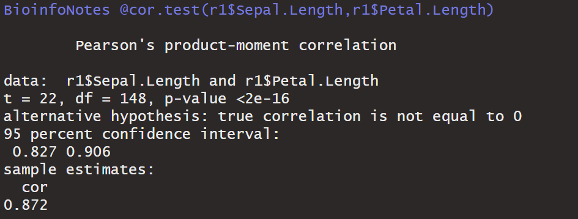
参考文章: https://mp.weixin.qq.com/s/I6Ppoc4H1G7rDFLctVB7dg
六.主成分分析¶
1.概述¶
在许多领域的研究与应用中，往往需要对反映事物的多个变量进行大量的观测，收集大量数据以便进行分析寻找规律。多变量大样本无疑会为研究和应用提供了丰富的信息，但也在一定程度上增加了数据采集的工作量，更重要的是在多数情况下，许多变量之间可能存在相关性，从而增加了问题分析的复杂性，同时对分析带来不便。如果分别对每个指标进行分析，分析往往是孤立的，而不是综合的。盲目减少指标会损失很多信息，容易产生错误的结论。因此需要找到一个合理的方法，在减少需要分析的指标同时，尽量减少原指标包含信息的损失，以达到对所收集数据进行全面分析的目的。由于各变量间存在一定的相关关系，因此有可能用较少的综合指标分别综合存在于各变量中的各类信息。主成分分析与因子分析就属于这类降维的方法。主成分分析是设法将原来众多具有一定相关性（比如P个指标），重新组合成一组新的互相无关的综合指标来代替原来的指标。主成分分析，是考察多个变量间相关性一种多元统计方法，研究如何通过少数几个主成分来揭示多个变量间的内部结构，即从原始变量中导出少数几个主成分，使它们尽可能多地保留原始变量的信息，且彼此间互不相关。通常数学上的处理就是将原来P个指标作线性组合，作为新的综合指标。最经典的做法就是用F1（选取的第一个线性组合，即第一个综合指标）的方差来表达，即Var(F1)越大，表示F1包含的信息越多。因此在所有的线性组合中选取的F1应该是方差最大的，故称F1为第一主成分。如果第一主成分不足以代表原来P个指标的信息，再考虑选取F2即选第二个线性组合，为了有效地反映原来信息，F1已有的信息就不需要再出现在F2中，用数学语言表达就是要求Cov(F1, F2)=0，则称F2为第二主成分，依此类推可以构造出第三、第四，……，第P个主成分。
主成分分析实际上是对原始变量进行线性变换，主成分就是原始变量的线性组合。假设有m个原始变量，X1,X2,···，Xm，我们想找到这些变量的m个线性组合：Z1 ，Z2 ，···，Zm。
Z1 = a11X1 +a12X2 + ··· + a1mXm
Z2 = a21X1 +a22X2 + ··· + a2mXm
···
Zm = am1X1 +am2X2 + ··· + ammXm
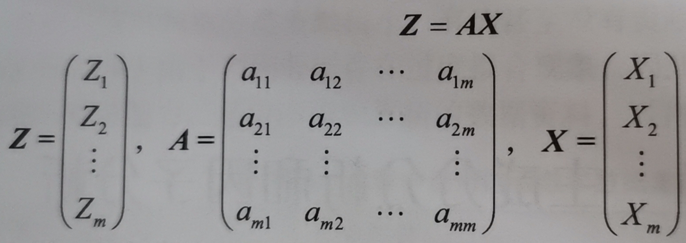
在进行主成分分析前需要检验数据是否适合做主成分分析，检验方法有KMO检验和特球形检验，但目前，大量数据发分析，是可以不需要检验的，数据量小需要检验。然后对原始数据进行标准化，原始数据减去均值，然后除以标准差，但也不是必须的，在做主成分时，用协方差矩阵是需要标准化，用相关系数矩阵是不需要对数据进行标准化。一般我们就用相关系数矩阵做主成分分析。求出相关系数矩阵后，对相关系数矩阵求特征值和特征向量。下面先简单介绍一下特征值与特征向量。
定义：设A为n阶实方阵，如果存在某个数 及某个n维非零列向量
及某个n维非零列向量 ，使得
，使得
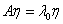
，则称 是方阵A的一个特征值，
是方阵A的一个特征值，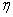
是方阵A的属于特征值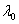
的一个特征向量。注：①定义说明特征值与特征向量是紧密相连的概念，对每个特征值必有属于它的特征向量，且有无穷多个；而对每个特征向量必属于某个特征值，且只属于一个特征值。②特征向量必须是非零向量，且必是列向量。③若
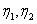
均为A的属于 的特征向量，则对任何不全为零的数
的特征向量，则对任何不全为零的数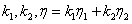
也是A的属于 的特征向量。
的特征向量。
因
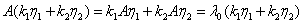
如果有线性代数基础，参考文章理解其计算过程。没有基础的话，至少上面的定义要能理解。
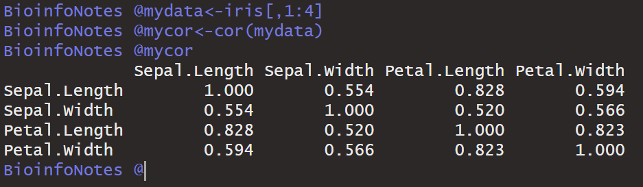
我们利用cor函数求出相关系数矩阵，然后利用eigen()函数求出它的特征值和特征向量。
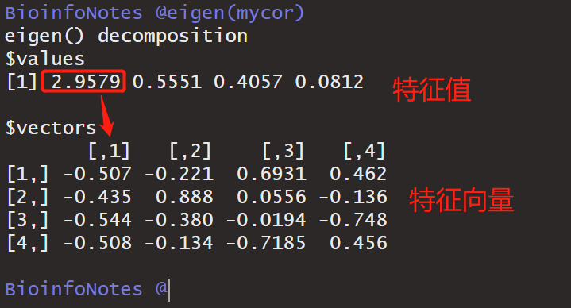
上面是自己算，我们当然不需要自己算，用函数fa.paralle。
x是原始的数据集，fa="pc"表示主成分分析，n.iter用于生成随机矩阵的个数，拿真实的相关矩阵和随机 矩阵的特征值比较，来得到主成分或因子的个数。
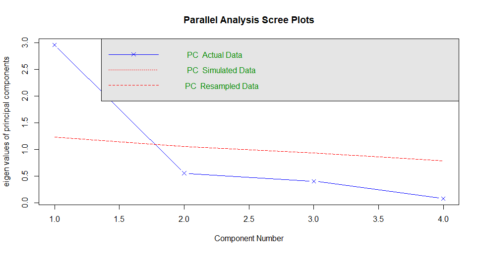
接下来就是确定主成分的个数。根据特征值大于1或者累计贡献度>0.8来定。
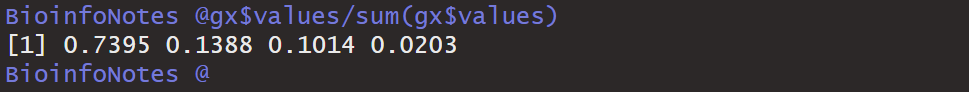
接下来就是确定主成分的评分，依据特征向量计算。
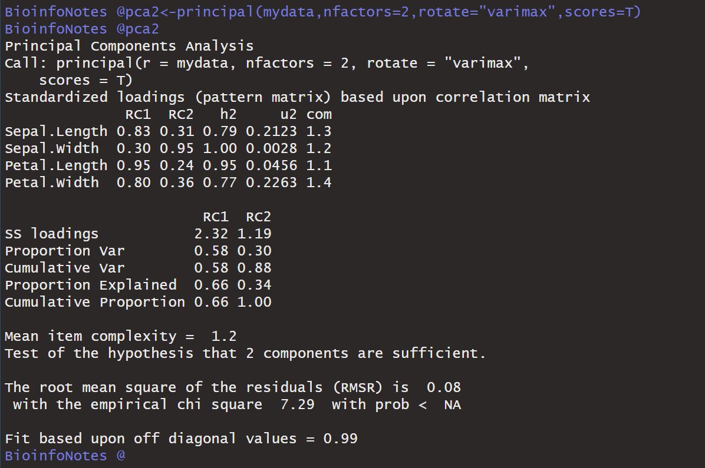
2.R语言实现¶
在R中用于完成主成分分析的函数是princomp()，该函数有2种调用方式：
a.公式形式
基本语法为：
参数介绍：
formula：指定用于主成分的公示对象，类似于回归分析和方差分析中的公式对象；
data：指定用于主成分分析的数据对象，一般为数据框；
subset：指定可选的向量，表示选择的样本子集；
na.action：一个函数，指定缺失数据的处理方法，若为NULL，则使用函数na.omit()删除缺失数据。
b. 矩阵形式
基本语法为：
princomp(x, cor = FALSE, scores = TRUE, covmat = NULL, subset = rep_len(TRUE, nrow(as.matrix(x))), fix_sign = TRUE, ...)
参数介绍：
X:指定用于主成分分析的数据对象，一般为数值矩阵的数据框:
Cor:逻辑值，指定用于主成分分析中采用的矩阵形式（相关矩阵或协方差阵）,为TRUE表示用样本的相关矩阵做主成分分析，为TALSE表示用样本的协方差阵做主成分分析,默认值为FALSE;
Scores:逻辑值，指定是否计算各主成分的分量，即是否计算样本的主成分得分，默认值TRUE;
Covmati:指定协方差阵，或者为cov.wt()提供的协方差列表，当数据不用参数x提供时，可由协方差阵提供;
Subset:指定可选向量，表示选择的样本子集。
函数princomp()的返回值为-个列表，包括:
sdev表示各主成分的标准差;loadings表示载荷矩阵;center表示各指标的样本均值;scale表示各指标的样本标准差;n.obs表示观测样本的个数；scores表示主成分得分（当参数scores= TRUE时提供）。
此外，也可以利用其他函数来提取主成分分析的结果:
函数summary()可用于提取主成分的信息;
函数loadings()可用于提取载荷矩阵;
函数predict()可用于计算主成分得分;
函数screeplot()可用于绘制主成分的碎石图;
函数biplot()可用于绘制数据关于主成分的散点图和原坐标在主成分下的方向。
3.综合案例¶
利用datasets包里的数据集Harman23.cor
rm(list = ls())
cor.matrix <- Harman23.cor$cov
eigen(cor.matrix)
eigen(cor.matrix)$values
round(eigen(cor.matrix)$vectors, 3)
PCA <- princomp(covmat = cor.matrix)
summary(PCA, loadings = TRUE)
screeplot(PCA, type = "lines")
abline(h = 1)
load <- loadings(PCA)
plot(load[, 1:2], xlim = c(-0.5, 0.5), ylim = c(-0.5, 0.5))
text(load[, 1], load[, 2], adj = c(-0.3, 0))
abline(h = 0, v = 0)
参考文章：
七.因子分析¶
1.概述¶
因子分析（factor analysis, 简称FC）又称因素分析，基于相关关系而进行的数据分析技术，是一种建立在众多的观测数据的基础上的降维处理方法。其主要目的是探索隐藏在大量观测数据背后的某种结构，寻找一组变量变化的共同因子，将相同本质的变量归入一个因子，可减少变量的数目，还可检验变量间关系的假设。
因子分析是对数据进行“降维”的另一种方法，它是主成分分析的推广和发展，也是研究相关矩阵或协方差阵的内部依赖关系，其思想在于:将多个变量综合为少数几个因子，以再现原始变量与因子之间的关系。主成分分析和探索性因子分析均是用来探索和简化多变量复杂关系的常用方法，它们之间有联系也有区别。主成分分析（PCA）是一种数据降维方法，它能将大量相关变量转化为一组很少的不相关变量，这些无关变量称为主成分。例如，使用PCA可将30个相关的环境变量转化为少数几个无关的成分变量，并且尽可能地保留原始数据集的信息。相对而言，探索性因子分析（EFA）是一系列用来发现一组变量的潜在结构的方法。它通过寻找一组更小的、潜在的或隐藏的结构来解释已观测到的、显式的变量间的关系。因子分析的主要思想是提取重要的不相关信息；而主成分分析是对原始变量线性组合，形成不相关的主成分，然后删掉不重要的成分。
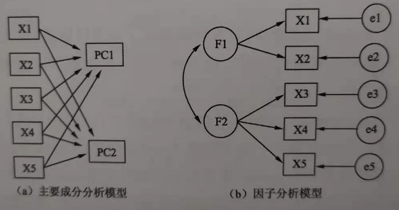
在医学、心理学等研究中，有些变量是可以直接测量的，称之为可观测变量或显变量，比如血压水平；有些变量是无法直接测量的，它们只能通过其他多个可观测变量来间接地反映，称之为不可观测变量或潜变量，比如学习能力这个指标是无法直接测量的，但它可以通过学习专注力、思维灵活度、学习成就感、反思力等多个指标来综合反映。由于学习专注力、思维灵活度等可观测指标都在不同程度上反映了学习能力的情况，所以这些指标之间可能会存在一定的相关关系。因子分析的数学模型如下：
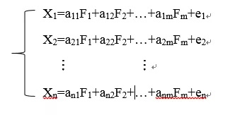
其中X1、X2、Xn表示原始变量（指标），每个原始变量的表达式中均有F1、F2、Fm，即F1、F2、Fm与每一个原始变量X1、X2、Xn均有关但无法直接观测得到，故称F1、F2、Fm为潜变量（公因子）。e1、e2、en只与相应的一个X有关，故称之为特殊因子或个性因子。
简单来说，因子分析（Factor Analysis）就是一种从分析多个原始指标的相关关系入手，找到支配这种相关关系的有限个不可观测的潜变量（公因子），并用这些潜变量来解释原始指标之间的相关性或协方差关系的多元统计方法。
这里需要知道一个概念，因子载荷，因子载荷 aij 的统计意义就是第i个变量与第 j 个公共因子的相关系数即表示 Xi 依赖 Fj 的份量（比重）。统计学术语称作权，心理学家将它叫做载荷，即表示第 i 个变量在第 j 个公共因子上的负荷，它反映了第 i 个变量在第 j 个公共因子上的相对重要性。因子旋转（factor rotation）是一种变换，就是旋转因子的坐标轴。为使因子分析法求出因子载荷阵结构简化，便于对主因子进行专业上解释，常对因子载荷阵施行变换或称因子旋转。最常用的方法是方差最大的正交旋转法，使旋转后的因子载荷阵中的每一列元素尽可能地拉开距离，即向0或1两极分化，使每一个主因子只对应少数几个变量具有高载荷，其余载荷很小， 且每一变量也只在少数个主因子上具有高载荷，其余载荷都很小。正交旋转适用于正交因子模型，即主因子是相互独立的情况，如果主因子是彼此相关的，这时要做非正交旋转即斜交旋转。在因子分析中，当求得公共因子及其因子载荷阵后，对公因子要给出具有实际意义的合理解释。如果公共因子难以和实际问题相对应，可对公因子进行旋转，使得旋转后的公因子具有实际意义。常用的旋转方法有两种：方差极大的正交旋转；方差极大的斜交旋转，正交旋转强调2个因子不相关，允许两个因子相关用斜交旋转。
在R中，前面计算步骤与主成分分析一样，就最后提取因子得分时用fa()函数。
x:进行因子分析的数据框
nfactors:要提取的公共因子的个数
rotate：指定旋转方法
scores:用何种方式计算因子得分，"regression"
fm:提取公因子的方法，默认：极小残差法。
##因子分析
cormat <- matrix(c(1, 0.439, 0.410, 0.288, 0.329, 0.248,
0.439, 1, 0.354, 0.354, 0.320, 0.329,
0.410, 0.354, 1, 0.164, 0.190, 0.181,
0.288, 0.354, 0.164, 1, 0.595, 0.470,
0.329, 0.320, 0.190, 0.595, 1, 0.464,
0.248, 0.329, 0.181, 0.470, 0.464, 1),
nrow = 6)
colnames(cormat) <- paste0("gene",1:6)
rownames(cormat) <- paste0("gene",1:6)
library(psych)
fa.parallel(cormat, n.obs = 220, fm = "ml")
FA1 <- fa(cormat, nfactors = 2, n.obs = 220, rotate = "none", fm = "ml")
FA1
FA2 <- fa(cormat, nfactors = 2, n.obs = 220, rotate = "varimax", fm = "ml")
FA2
fa.diagram(FA2, digits = 2)
FA3 <- fa(cormat, nfactors = 2, n.obs = 220, rotate = "promax", fm = "ml")
FA3
fa.diagram(FA2, digits = 2)
fa.diagram(FA3, digits = 2)
函数fa.parallel在主成分分析中用于fa参数指定方法，提取主成分，在因子分析中，用fm参数指定，有（minres, ml, uls, wls, gls, pa）这几种。默认minres(最小残差法），ml代表最大拟然法，wls代表加权最小二乘法，gls代表广义加权最小二乘法，pa代表主成分法。fa.parallel(cormat, n.obs = 220, fm = "ml")，如果cormat已经是相关性矩阵了，需要指定n.obs ，代表观测的个数。我个人理解这个值最小可以设置为矩阵最小的元素个数。
不过上面这些，我们是自己一步一步计算，在R中可以用factanal()函数一次性完成。
2.R实现¶
在R中，用于完成因子分析的函数是factanal()，该函数从样本、样本方差或样本协方差出发对数据做因子分析，采用极大拟然法估计参数，还可以直接给出方差最大的载荷因子矩阵，其基本书写格式为：
factanal(x, factors, data = NULL, covmat = NULL, n.obs = NA,
subset, na.action, start = NULL,
scores = c("none", "regression", "Bartlett"),
rotation = "varimax", control = NULL, ...)
参数介绍：
x：指定一个因子分析的对象，可以为公式、数据框和矩阵；
factors：指定因子的个数；
data：数据框，当参数x为公式时使用；
Covmat：指定祥本协方矩阵或样本相关矩阵；
N.ods：整数，用上指定观测样本的个数，
Subset：指定可选向量，表示选择的样本子集；
Na.action：一个函数，指定缺失数据的处理方法，若为NULL，则使用函数na.omit()删除缺失数据；
Start：指定特殊方差的初始值，可以为NULL或一个矩阵， 默认值是NULL;
Sores：字符串,指定因子得分的计算方法，"none"表示不计算因子得分,"regression"表水用回归方法计解因子得分，"Bartlett"表示用Bartlett法计算因子得分，默认值为none;
Rotution：字符串，指定因子载荷矩阵的旋转方法，正交旋转中常用方差最大旋转法（"varimax"），还有四次方最大旋转法（quartimax）和均方最大旋转法（equamax）。斜交旋转法中最常用的方法是oblimin和promax旋转。若为"none"则表示不做旋转;
Control：模型中因子对照的列表，默认值为NULL，该函数的返回值为一个列表，其中包括:
- loadings表示因子载荷阵;
- uniqucnsses表示特殊方差:
- correlation表示相关矩阵;
- criteria表示优化结果，副对数似然函数值和函数梯度的调用次数；
- factors表示因子数；
- dof表示因子分析模型中的自由度;
- method一般为"mle"，表示极大似然估计；
- rotmat 表示旋转矩阵；
- scores表示因子得分矩阵；
- n.obs表示样本的观测个数。
此外，也可以利用其他函数来提取因子分析的结果，函数varimax()可用于完成因子载荷矩阵的旋转变换，其返回值为一个列表，其中包括旋转后的因子载荷阵和旋转矩阵；函数promax()用于完成斜交变化，返回值与函数varimax()基本一致，不同之处在于顺转矩阵不是正交阵。
3.综合案例:能力和智商测试的因子分析探索¶
下面利用ability.cov数据集进行实战演练，该数据集是关于能力和智商测试的数据，对112个个体进行6项测试，分别为:使用Catell的文化公平测试(general)、 图片完成测试(picture)、板块设计(blocks)、迷宫(maze)、阅读理解(reading) 和词汇量(vocab), 数据以列表的形式存储，其中包括cov、center和n.obs三个子列表。具体可阅读文章：第7章:因子分析。
下面将数据集中的协方差阵提取出来，并用函数cov2cor()将其转化为相关矩阵：
绘制相关矩阵图，不难发现原始数据中存在多重共线性问题，为了解决这一问题，需要进行因子分析。
上面代码表示，采用未旋转的主轴迭代因子法进行因子分析，人为设定因子个数为2；输出结果中：
Uniquenesses：表示特殊方差
Loadings：为因子载荷矩阵；
Factor1和Factor2分别为提取的第一主因子和第二主因子；
SS loadings：表示公因子Fi对6个原始变量总方差贡献；
Proportion Var：表示方差贡献率；
Cumulative Var ：表示累计方差贡献率。
若采用正交旋转和斜交旋转提取因子，输出结果有所不同，具体如下：
update(fa1,factors=2,rotation = "varimax")#用用正交旋转提取因子
update(fa1,factors=2,rotation = "promax")#用斜交旋转提取因子
输出结果显示，不同的因子旋转法得到的分析结果不同，需要注意的是，本案例均设定因子个数为2，也可设定为3，但是不能设置为4及以上，否则R会报错，因为原始变量的个数为6，超过3个的因子设定对于6来说太大了。
上述代码表示:采用斜交变换法进行因子分析，分别设定因子个数为3和4，输出结果显示:因子个数设定为3时累计方差贡献率为0.688,而因子个数设定为4时软件报错。根据loadings的输出结果，原始变量与3个主因子之间的线性关系可表示为:
general=0.359_F1_+0.322_F2_+0.210_F3_
picture=0.935_F3_
blocks=0.612_F2_+0.317_F3_
maze=-0.124_F1_+0.811_F2_-0.199_F3_
reading=1.051_F1_-0.113F2
vocab =0.810_F1_
下面对提取出的因子进行命名:在第一主因子中,系数绝对值较大的变量为reading和vocab,且高度正相关，故因子F1反映的是阅读能力;在第二主因子中，系数绝对值较大的变量为blocks和maze,且高度正相关，故因子F2反映的是结构化思维能力;在第三主因子中，系数绝对值较大的变量为picture,且高度正相关，故因子F反映的是结构化分析能力艺术敏感度。
八.线性规划¶
1.概述¶
线性规划其实就是高中数学中求最优解的过程，还记得吗？？下面是一个高中数学题，看一下，回忆一下。
若x,y满足约束条件
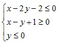
,则z=3x+2y的最大值是多少？（18年全国一卷理13题）解：
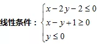
目标函数：z=3x+2y
可行域：蓝色部分
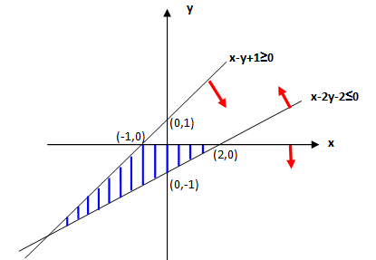
将这样的数学问题应用到生活中来，举个案例，比如某药厂生产A,B,C3种药，三种药物的生产成本和利润是不一样的，在一定的约束条件下，比如资金，厂房规模等，实现收益最大话，怎么搞的问题。
| A | B | C | |
|---|---|---|---|
| 市场售价(元/盒） | 55 | 65 | 128 |
| 原料成本(元） | 5 | 12 | 90 |
| 劳动成本（元） | 2 | 2 | 4 |
| 只产一种药物一年的最高产量（盒） | 80000 | 50000 | 40000 |
原料：10000000元，劳动:2000000，一年最高产量:130000
目标函数：55x1 + 65x2 + 128*x3，求这个函数的最大值。
约束条件：5x1 +12x2 + 90*x3 <= 10000000
2*x1 + 2*x2 + 4*c <= 2000000
x1 + 0 + 0 <= 80000
0 + x2 +0 <= 50000
0 + 0 + x3 <= 40000
x1 + x2 +x3 <= 130000
2.R语言求解¶
在R中，线性规划求解利用 linprog包中的solveLP()函数。
solveLP( cvec, bvec, Amat, maximum = FALSE,
const.dir = rep( "<=", length( bvec ) ),
maxiter = 1000, zero = 1e-9, tol = 1e-6, dualtol = tol,
lpSolve = FALSE, solve.dual = FALSE, verbose = 0 )
重要参数：
cvec ：vector c (containing n elements).长度为n的矩阵
bvec ：vector b (containing m elements).长度为m的矩阵
Amat ：matrix A (of dimension m \times n)，即m行n列的矩阵
const.dir ：vector of character strings giving the directions of the constraints: each value should be one of "<," "<=," "=," "==," ">," or ">=". (In each pair the two values are identical.)
maximum ：logical. Should we maximize or minimize (the default)?
看参数解释不方便，结合上面案例,看下面代码，就知道什么意思啦。
cvec<-c(55,65,128)
bvec <- c(10000000,2000000,80000,50000,40000,130000)
Amat <- rbind(c(5,12,90),c(2,2,4),c(1,0,0),c(0,1,0),c(0,0,1),c(1,1,1))
const.dir <- rep("<=",6)
solveLP(cvec,bvec,Amat,maximum=TRUE,const.dir)
library(linprog)
cvec<-c(55,65,128)
bvec <- c(10000000,2000000,80000,50000,40000,130000)
Amat <- rbind(c(5,12,90),c(2,2,4),c(1,0,0),c(0,1,0),c(0,0,1),c(1,1,1))
const.dir <- rep("<=",6)
solveLP(cvec,bvec,Amat,maximum=TRUE,const.dir)
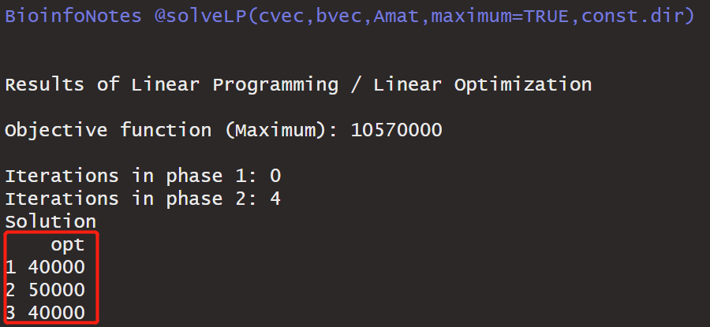
我们求出x1,x2,x3的解分别为40000,50000和40000。
九.判别分析¶
1.概述¶
判别分析是判断个体所属类别的一种多元统计分析方法。它在医学领域有着广泛的应用，主要有疾病诊断、疾病预测和病因学分析。例如，根据病人的症状、生化指标判断病人得的是什么疾病，根据病人症状的严重程度或者指标的高低预测病人的预后等等。比如，高血压、高血糖、动脉硬化程度这些都是脑血管疾病的患病危险因素；那么如果知道了人体的这些指标，并对这些数据进行分析，就可以对尚未明确诊断的人是否发生脑血管疾病进行预测；对于很可能是脑血管疾病的人就可以事先给予预防，或者在入院后尽快得到救治，提高诊疗有效率。
判别分析也属于对事物现象进行分类的统计分析方法，它和聚类分析不同的地方在于：聚类分析(后面会讲)事先并不知道分型情况，而判别分析需要事先知道分型情况，已知的分型数据又叫训练数据。判别分析需要事先得到一些已经明确知道诊断结果的训练数据，利用这些数据建立判别准则，然后依据准则对未知类别的预测值进行判别。如果是对于分类不明的数据，可以先用聚类分析对这组数据进行分类，然后再用判别分析对新建立的类别进行判断。判别问题用统计的语言来表达，就是已有q个总体
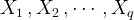
，它们的分布函数分别为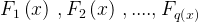
,每个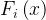
都是 p 维函数。对于给定的样本 X ，要判断它来自哪一个总体？当然，应该要求判别准则在某种意义下是优的，例如错判的概率小或错判的损失小等。判别方法是确定待判样品归属于哪一组的方法，可分为参数法和非参数法，也可以根据资料的性质分为定性资料的判别分析和定量资料的判别分析。此处给出的分类主要是根据采用的判别准则分出几种常用方法。除最大似然法外，其余几种均适用于连续性资料。
1）最大似然法：用于自变量均为分类变量的情况，该方法建立在独立事件概率乘法定理的基础上，根据训练样品信息求得自变量各种组合情况下样品被封为任何一类的概率。当新样品进入是，则计算它被分到每一类中去的条件概率（似然值），概率最大的那一类就是最终评定的归类。
2）距离判别：其基本思想是由训练样品得出每个分类的重心坐标，然后对新样品求出它们离各个类别重心的距离远近，从而归入离得最近的类。也就是根据个案离母体远近进行判别。最常用的距离是马氏距离，偶尔也采用欧式距离。距离判别的特点是直观、简单，适合于对自变量均为连续变量的情况下进行分类，且它对变量的分布类型无严格要求，特别是并不严格要求总体协方差阵相等。
3）Fisher判别：亦称典则判别，是根据线性Fisher函数值进行判别，通常用于两组判别问题，使用此准则要求各组变量的均值有显著性差异。该方法的基本思想是投影，即将原来在R维空间的自变量组合投影到维度较低的D维空间去，然后在D维空间中再进行分类。投影的原则是使得每一类的差异尽可能小，而不同类间投影的离差尽可能大。Fisher判别的优势在于对分布、方差等都没有任何限制，应用范围比较广。另外，用该判别方法建立的判别方差可以直接用手工计算的方法进行新样品的判别，这在许多时候是非常方便的。
4）Bayes判别：许多时候用户对各类别的比例分布情况有一定的先验信息，也就是用样本所属分类的先验概率进行分析。比如客户对投递广告的反应绝大多数都是无回音，如果进行判别，自然也应当是无回音的居多。此时，Bayes判别恰好适用。Bayes判别就是根据总体的先验概率，使误判的平均损失达到最小而进行的判别。其最大优势是可以用于多组判别问题。但是适用此方法必须满足三个假设条件，即各种变量必须服从多元正态分布、各组协方差矩阵必须相等、各组变量均值均有显著性差异。
2.几个相关概念¶
(1) 欧式距离¶
欧式距离也称欧几里得距离，是最常见的距离度量，衡量的是多维空间中两个点之间的绝对距离。也可以理解为：m维空间中两个点之间的真实距离，或者向量的自然长度（即该点到原点的距离）。在二维和三维空间中的欧氏距离就是两点之间的实际距离，下面是具体的计算公式:
上面的欧式距离是简单的欧氏距离，标准化欧氏距离是针对简单欧氏距离的缺点而作的一种改进方案。标准欧氏距离的思路：既然数据各维分量的分布不一样，好吧！那我先将各个分量都“标准化”到均值、方差相等吧。均值和方差标准化到多少呢？这里先复习点统计学知识吧，假设样本集X的均值（mean）为m，标准差为s，那么X的“标准化变量”表示为：

而且标准化变量的数学期望为0，方差为1。因此样本集的标准化过程（standardization）用公式描述就是：标准化后的值 = ( 标准化前的值 － 分量的均值 ) /分量的标准差。经过简单的推导就可以得到两个n维向量a(x11,x12,…,x1n)与b(x21,x22,…,x2n)间的标准化欧氏距离的公式：
如果将方差的倒数看成是一个权重，这个公式可以看成是一种加权欧氏距离（WeightedEuclidean distance）。
(2) Mahalanobis 距离（马氏距离）¶
在介绍马氏距离之前，我们先来看如下几个概念：
方差：方差是标准差的平方，而标准差的意义是数据集中各个点到均值点距离的平均值。反应的是数据的离散程度。
协方差： 标准差与方差是描述一维数据的，当存在多维数据时，我们通常需要知道每个维数的变量中间是否存在关联。协方差就是衡量多维数据集中，变量之间相关性的统计量。比如说，一个人的身高与他的体重的关系，这就需要用协方差来衡量。如果两个变量之间的协方差为正值，则这两个变量之间存在正相关，若为负值，则为负相关。
协方差矩阵： 当变量多了，超过两个变量了。那么，就用协方差矩阵来衡量这么多变量之间的相关性。假设 X是以 n 个随机变数（其中的每个随机变数是也是一个向量，当然是一个行向量）组成的列向量：
马氏距离(Mahalanobis distance)是由印度统计学家马哈拉诺比斯(P. C. Mahalanobis)提出的，表示点与一个分布之间的距离。它是一种有效的计算两个未知样本集的相似度的方法。与欧氏距离不同的是，它考虑到各种特性之间的联系（例如：一条关于身高的信息会带来一条关于体重的信息，因为两者是有关联的），并且是尺度无关的(scale-invariant)，即独立于测量尺度。

马氏距离有很多优点： 马氏距离不受量纲的影响，两点之间的马氏距离与原始数据的测量单位无关；由标准化数据和中心化数据(即原始数据与均值之差）计算出的二点之间的马氏距离相同。马氏距离还可以排除变量之间的相关性的干扰。
(3) 切比雪夫距离（Chebyshev distance）¶
在数学中，切比雪夫距离（Chebyshev distance）或是L∞度量，是向量空间中的一种度量，二个点之间的距离定义是其各坐标数值差绝对值的最大值。以数学的观点来看，切比雪夫距离是由一致范数（uniform norm）（或称为上确界范数）所衍生的度量，也是超凸度量（injective metric space）的一种。国际象棋玩过么？国王走一步能够移动到相邻的8个方格中的任意一个。那么国王从格子（x1,y1）走到格子（x2,y2）最少需要多少步？自己走走试试。你会发现最少步数总是max(| x2-x1 | , | y2-y1 | ) 步。有一种类似的一种距离度量方法叫切比雪夫距离。
二维平面两点a(x1,y1)与b(x2,y2)间的切比雪夫距离
两个n维向量a(x11,x12,…,x1n)与b(x21,x22,…,x2n)间的切比雪夫距离 这个公式的另一种等价形式是

看不出两个公式是等价的？提示一下：试试用放缩法和夹逼法则来证明。
(3) 曼哈顿距离¶
二维平面两点a(x1,y1)与b(x2,y2)间的曼哈顿距离
两个n维向量a(x11,x12,…,x1n)与b(x21,x22,…,x2n)间的曼哈顿距离
(4) 闵氏距离¶
闵氏距离不是一种距离，而是一组距离的定义。两个n维变量a(x11,x12,…,x1n)与b(x21,x22,…,x2n)间的闵可夫斯基距离定义为：
其中p是一个变参数。当p=1时，就是曼哈顿距离；当p=2时，就是欧氏距离；当p→∞时，就是切比雪夫距离 。 根据变参数的不同，闵氏距离可以表示一类的距离。闵氏距离，包括曼哈顿距离、欧氏距离和切比雪夫距离都存在明显的缺点。举个例子：二维样本（身高,体重），其中身高范围是150190，体重范围是5060，有三个样本：a(180,50)，b(190,50)，c(180,60)。那么a与b之间的闵氏距离（无论是曼哈顿距离、欧氏距离或切比雪夫距离）等于a与c之间的闵氏距离，但是身高的10cm真的等价于体重的10kg么？因此用闵氏距离来衡量这些样本间的相似度很有问题。简单说来，闵氏距离的缺点主要有两个：以上将各个分量的量纲（scale），也就是“单位”当作相同的看待了。(2)没有考虑各个分量的分布（期望，方差等)可能是不同的。
(5) 兰氏距离¶
兰氏距离（Lance and Williams distance）堪培拉距离（Canberra Distance），被认为是曼哈顿距离的加权版本。其定义公式为：
通常兰氏距离对于接近于0（大于等于0）的值的变化非常敏感。与马氏距离一样，兰氏距离对数据的量纲不敏感。不过兰氏距离假定变量之间相互独立，没有考虑变量之间的相关性。
3.距离判别¶
距离判别是简单、直观的一种判别方法，该方法适用于连续性随机变量的判别类， 对变量的概率分布没有什么限制。距离判别的基本思想是样品X离哪个总体的距离最近，就判断X属于哪个总体。在判别法中根据不同的功能需求，会经常用到dist()、mahalanobis()和wmd()这三个函数。
(1) dist()函数¶
进行距离判别的第一步是计算"距离"，最常用的函数为dist()，该函数按照指定方法计算数据矩阵之间的距离，书写格式为：
参数介绍:
X：指定用于计算距离的数据对象，可以为一个矩阵、数据框或者“dist" 类的对象;
Method：指定测度距离的方法，"euclidean" 表示欧氏距离，"maximum" 表示切比雪夫距离，"manhattan"表示绝对值距离，"canberra"表示 Lance距离，"binary"表示定性变量距离，"minkowski"表示明科夫斯基距离，使用时要指定p值，默认值为"euclidean";
Diag：逻辑值，为TRUE时表示输出距离矩阵的对角线，默认值为FALSE;
Upper：逻辑值，为TRUE时表示输出距离矩阵的上三角部分,默认值为FALSE;
p：指定明科夫斯基距离的权数，当参数method设置为"minkowski"时， 此参数需要进行设定，默认值为2。
(2) mahalanobis()函数¶
不难发现，函数dist()不能用于计算马氏距离，下面介绍一个专门用于计算马氏距离的函数: mahalanobis()， 其基本书写格式为:
参数介绍：
x：指定用于计算距离的数据对象，p维的数据向量或矩阵；
Center：指定分布的均值，即总体均值；
Cov：指定分布的协力差，即总体协方差，一般用样本的协方差进行评估；
inverted：逻辑值，若为TRUE，则表示参数cov应该包括协方差的逆。
(3) wmd()函数¶
上述介绍的两个函数均返回距离值，而不能直接判别，下面介绍一个可直接用于判别的函数: wmd()， 该函数存在于WMDR包中，可用于实现加权马氏距离的判别，它利用函数mahalanobis()计算出马氏距离，然后进行判别分析，最终返回包含结果和准确度的表单，其基本书写格式为:
TmX:指定训练集的数据对象，可以为矩阵或数据框;
TrnG:一个因子类的向量，用于指定已知的训练样本的分类;
Tweight:指定权重，若没有进行指定，则软件默认使用主成分分析中的相应贡献率作为权重，默认值为NUll,表示不进行加权，采用传统的马氏距离判别法;
TstX: 指定测试集的数据对象，可以为向量、矩阵或数据框，若为向量，则将被识别为单个案例的行向量，默认值为NULL，表示直接对训练集进行判别;
Var.equal: 指定不同类别之间是否具有相同的协方差，默认值为F。
需要注意的是，函数wmd()中训练集的样本量与测试集的样本量相等，否则R语言会报错。
(4) 案例¶
下面利用iris 数据集进行操作演练，由于该数据集中鸢尾花的种类有三种，下面将原始数据分为训练集和测试集，分别包含随机抽取的100个样本，具体操作如下:
上面代码表示：首先利用函数set.seed()释放随机种子，然后利用函数sample()从1到150中随机抽取100个数据，将抽取的数据对应到数据中观测样本的编号，得到训练数据集，剩下的数据集即为测试集。下面对训练集中的观测样本按照变量Species分类：
d1<-subset(dtrain,Species=="setosa");dim(d1)
d2<-subset(dtrain,Species=="versicolor");dim(d2)
d3<-subset(dtrain,Species=="virginica");dim(d3)
上述输出结果显示：在训练集中种类为setosa的鸢尾花共有32条记录，种类为versicolor()和virginica的鸢尾花分别有32和36条记录。
下面利用函数mahalanobis()计算马氏距离:
ma1<-mahalanobis(dtest,colMeans(d1[,1:4]),cov(d1[,1:4]))
ma2<-mahalanobis(dtest,colMeans(d2[,1:4]),cov(d2[,1:4]))
ma3<-mahalanobis(dtest,colMeans(d3[,1:4]),cov(d3[,1:4]))
(distance<-cbind(ma1,ma2,ma3,iris[-sa,5]))
上述代码表示:分别对训练集计算三种类别的马氏距离，其中函数colMeans()表示按列计算均值;训练集中每一个观测样本分别对应三个马氏距离，然后利用函数cbind()将三个马氏距离值与原始数据集中测试样本对应的分类合并在一起，部分输出结果如下。
对于测试集中的每一个观测样本而言，三个马氏距离中最小的那一个所对应的类别即为测试样本属于的类别，如第一条记录中，第一个马氏距离的值明显小于另外两个，故第一条记录应归为第一类，即该鸢尾花属于setosa类，与原始数据集中的分类一致，说明分类正确。
上述分类过程没有直接得到结果，需要比较每一个测试样本对应的三个马氏距离进行分类，如需了解该分类的效率，还要进行后续操作，分类过程较为烦琐，下面利用函数wmd()直接得到分类结果:
#install.packages("WMDR")# 对高版本的R已经不适用
library(WMDR)
dta<-iris[,1:4]
species<-gl(3,50)
wmd(dta,species)
wmd(dta,species,diag(rep(0.25,4)))#设定权重，增加准确率。
函数wmd()的输出结果中，第一部分表示对150个观测值进行分类的结果（由于函数中没有指定测试集和训练集，故软件默认训练集和测试集均为同一个）; "num of wrong judgement"表示判别错误的样本编号,可以看到有8个样品错判; "samples divided to"和"samples actually belongs to" 分别表示上述样品的错误判别归类和真实类别;"percent of right judgement" 表示判别结果的正确率，由（150-8） /150得到正确率为94.7%。
4.贝叶斯（Bayes）判别分析¶
(1) 概述¶
Bayes判别，它是基于Bayes准则的判别方法，判别指标为定量资料，它的判别规则和最大似然判别、Bayes公式判别相似，都是根据概率大小进行判别，要求各类近似服从多元正态分布。
Bayes准则：寻求一种判别规则，使得属于第k类的样品在第k类中取得最大的后验概率。
Bayes公式判别进行判别分析与最大似然判别的原理相似，都是以概率为依据，最大似然法的基础上引入了先验概率（prior probability），计算所判别的后验概率P(Yk|a):
其中P(Yk)即为第k类出现的概率，或称为先验概率。
且各类均近似服从多元正态分布，当各类的协方差阵相等时，可获得由m个指标建立的g个线性判别函数Y1，Y2，…，Yg，分别表示属于各类的判别函数值：
其中Cjk即为判别系数，通过合并协方差阵代入即可计算得各个指标的判别系数，而C0k中则加以考虑了先验概率P（Yk）：
先验概率的确定：若未知各类的先验概率时，一般可用：
- 1）等概率（先验无知）：P(Yk)= 1/g（all groups equal）。
- 2）频率：P(Yk)= nk/N （当样本较大且无选择偏倚时用，compute from sample size）
判别规则：
- 1）计算样品属于各类的判别函数值，把对象判别为Y值最大的类。
- 2）根据所得Y值，我们亦可以进一步计算属于k类的后验概率，再将对象判给后验概率最大的一类。
- 以上两种判别规则的结果是完全一致的。
(2) R实战案例¶
实现Bayes判别可以调用程序包klaR中NaiveBayes()函数，其调用格式为：
x为训练样本的矩阵或数据框，grouping表示训练样本的分类情况，prior可为各个类别指定先验概率，默认情况下用各个类别的样本比例作为先验概率，usekernel指定密度估计的方法，默认情况下使用标准的密度估计，设为TRUE时，则使用核密度估计方法；fL指定是否进行拉普拉斯修正，默认情况下不对数据进行修正，当数据量较小时，可以设置该参数为1，即进行拉普拉斯修正。
下面利用Iris数据集进行Bayes判别
#install.packages("klaR")
grouping <-as.factor(iris$Species)
library(klaR)
x <- NaiveBayes(Species~Sepal.Length+Sepal.Width+Petal.Length+Petal.Width,data=iris)
names(x)
plot(x)
p <- predict(x)
table(p$class,iris$Species)
NaiveBayes一个有7个输出结果，其中，apriori是使用的先验概率，tables存储了用于建立判别规则的所有变量在各类别下的条件概率。
5.费歇尔（Fisher）判别分析¶
(1) 概述¶
Fisher判别，又称典则判别（canonical discriminant），基本思想是“投影”，即将高维空间中的样本点投影到低维空间，从而简化问题。Fisher判别最重要的就是选择出适当的投影轴，保证投影后每一类之内的样本点的离散程度尽可能低，而不同类之间的样本点离散程度尽可能高。适用于两类和多类判别。我们将结合两类判别的问题，来介绍一下Fisher判别的原理。
已知有A类和B类两类观察对象，A类有a例，B类有b例，分别记录了X1，X2，……Xm个观察指标，我们称这m个观察指标为判别指标或变量。
Fisher判别法就是找到一个线性组合：
使得综合指标Z在A类的均数与B类的均数的差异尽可能大，而两类的类内综合指标的变异（S2A+S2B）尽可能小，也就是类间差异尽可能大，类内变异尽可能小，即使
达到最大，此时综合指标的公式便称为Fisher判别函数，C1，C2，……，Cm即为判别系数。
建立判别函数后，我们逐例计算出综合指标Zi，求得A类的均数、B类的均数及总均数，按照下式计算判别界值：
如果A类均值大于B类的话，最终的判别规则如下：
收集22例肝硬化患者的3个指标（腹水量X1，肝长径X2，肝短径X3）中心化、标准化后的资料，其中早期患者A类12例，晚期患者B类10例，如果让我们做Fisher判别：
Step1找到一个类间差异尽可能大，类内变异尽可能小判别函数，各系数通过合并协方差阵代入解方程可得，即Z=-0.070X1+0.225X2-0.318X3；
Step2 逐例计算综合指标Zi，计算出A类、B类的均数和总均数分别为1.428，-1.722，-0.004；
Step3 确定界值，进行两类判别Zc=(1.428+1.722)/2=-0.147，那么-0.147即为界值，Z值高于-0.147即判别为A类，低于则判别为B类。
Step4 判别效果评价，一般要求判别函数的误判概率小于0.1或0.2才有应用价值。本例有4例错判，那么误判概率为4/22=18.2%。
22例患者3项指标观察结果
(2) R语言实现¶
Fisher 判别有线性判别、二次判别等多种判别方法。具体地，对于线性判别，先将样本点投影到一维空间（即直线），若效果不好，则可以增加一个维度，即投影到二维空间，依此类推。二次判别与线性判别的区别就在于投影面的形状不同，线性判别的投影面为直线或平面，而二次判别使用若千二次曲面将样本点划分到相应的类别中。MASS包里的函数lda()可用于线性判别，而函数qda()可用于二次判别，其使用方法类似。在R语言中，进行Fisher判别的最常用函数为lda()。lda()有2种调用方式。
公式形式：
参数介绍:
- Formula:指定用于Fisher判别的公示对象;
- Data:指定用于Fisher判别的数据对象，一般为数据框，且优先采用公式中指定的变量数据;
- Subset:指定可选向量，表示选择的样本子集;
- Na.action:一个函数，指定缺失数据的处理方法，若为NULL，则使用函数
- na.omit()删除缺失数据。
矩阵形式：
数据框形式：
参数介绍:
- X:指定用于Fisher判别的数据对象，可以为矩阵、数据框和包含解释变量的矩阵；
- Grouping:因子向量，用于指定样本属于哪一类；
- Subset:指定可选向量，表示选择的样本子集;
- Na.action:一个函数，指定缺失数据的处理方法，若为NULL,则使用函数na. omit()删除缺失数据；
- Prior:指定各个类别的先验概率，默认值为已有训练样本的计算结果;
- tol:控制精度，用于判断矩阵是否奇异;
- Method:字符串，用于指定估计方法，“mle”表示极大似然估计,“mve”表示使用cov. mve进行估计，“t”表示基于t分布的稳健估计；
- CV:逻辑值，若为TRUE,则表示返回值中将包括舍一法的交叉验证结果;
- Nu;当参数method设定为“t”时，此处需要设定t分布的自由度。
函数lda()的返回值包括:调用方式、先验慨率、每一类样本的均值和线性判别系数（ Fisher判别属于线性判别）。此外，还可以利用函数predict()输出Fisher判别的结果。
下面以iris数据集进行操作演练，首先对数据集中的分类变量进行数据转换，将莺尾花的三个类别分别用1,2,3替代：
library(MASS)
data(iris)
diris<- data.frame(rbind(iris3[,,1], iris3[,,2], iris3[,,3]),species =rep(c(1,2,3), rep(50,3)))
head(diris)
下面提取训练集和测试集，由于函数lda(）中要求训练集的样本与测试集的样本量相等，故此处的训练集和测试集均为75，具体操作如下：
上面结果显示：测试数据集中莺尾花类别分别为1,2,3的样本量分别为28,22和25，利用函数lda()进行Fisher()判别分析的代码如下：
上面结果中，Call表示调用方法；Prior probabilities of groups表示先验概率；Group means表示每一类样本的均值；Coefficients of linear discriminants表示线性判别系数；Proportion of trace表示比例值。
pre<-predict(z, diris[-sa, ])
pre$class
head(pre$posterior,n=20)
head(pre$x,n=20)
class<-pre$class
diris$species[-sa]
sum(class==diris$species[-sa])
然后利用class()函数将判别结果展示出来，该函数输出结果为1个列表，其中class、posterior和x三个子列表，分别表示分类结果，后验概率，由于输出量较大，故后面只展示20行记录。
在测试数据集的75条记录中，75个样本分类正确。
6.K最邻近判别¶
K最邻近（K-Nearest Neighbor,KNN）算法是一个理论上比较成熟的分类算法，也是最简单的分类算法之一。其基本思路是，如果一个样品在特征空间中与K个最邻近（或最相似）样品中的大多数属于某一个类别,则将该样品判为这个类别。KNN法在进行判别时，主要依靠样品周围若干邻近样品的信息，对于类域的交叉或重叠较多的待分类样品来说，分类效果通常比其他方法好。class包里的函数knn()可以实现KNN分类,在函数中需要输入训练集（train）、测试集（test）、训练集里样品的类别标签（cl）和邻近点的个数（k）等。下面以数据集iris为例说明函数knn()的使用方法。首先，建立训练集和测试集:
##k最邻近判别
set.seed(1234)
nrow(iris)
s <- sample(1:150, 100)
train <- iris[s, ]
test <- iris[-s, ]
cl <- train[, 5]
library(class)
iris.knn <- knn(train[, -5], test[, -5], cl)
iris.knn
confusion.matrix <- table(iris.knn, test[, 5])
confusion.matrix
accuracy <- sum(diag(confusion.matrix))/nrow(test)
accuracy
accuracy <- vector(length = 20)
for(i in 1:20) {
iris.knn <- knn(train[, -5], test[, -5], cl, k = i)
confusion.matrix <- table(iris.knn, test[, 5])
accuracy[i] <- sum(diag(confusion.matrix))/nrow(test)
}
accuracy
plot(accuracy, type = "b", xlab = "k")
十.聚类分析¶
1.概述¶
聚类（Cluster）分析，顾名思义就是指将研究的对象进行分类，这是人们认识世界最基本的方法。生物学家通过分类，区分了动物和植物，物理学分成了力、热、声、电，化学分成了有机和无机。古老的分类学，人们主要靠经验和专业知识实现分类，随着人类对自然的认识不断加深，仅靠经验和专业知识已不能准确分类，于是最早把数学工具引进了植物分类，出现了种、属、科、目、纲、门和界的自大而小的阶梯结构，一定程度上反映了种系发生和进化的规律。后来随着多元分析的引进，从植物分类学中逐渐分离出一个专门进行聚类分析的分支。
与多元分析的其他方法相比，聚类分析是很粗糙的，理论尚不完善，但由于它成功地应用于心理、经济、社会、管理、医学、地质、生态、地震、气象、考古、企业决策等，因此成了多元分析的重要方法，统计包中都有丰富的软件，对数据进行聚类处理。
聚类分析除了独立的统计功能外，还有一个辅助功能，就是和其他统计方法配合，对数据进行预处理。例如，当总体不清楚时，可对原始数据进行聚类，根据聚类后相似的数据，各自建立回归分析，分析的效果会更好。同时如果聚类不是根据个案，而是对变量先进行聚类，聚类的结果，可以在每一类推出一个最有代表性的变量，从而减少了进入回归方程的变量数。
聚类分析是研究按一定特征，对研究对象进行分类的多元统计方法，它并不关心特征及变量间的因果关系。分类的结果，应使类别间个体差异大，而同类的个体差异相对要小。例如，同学间会自然地形成一些小圈子，圈子内的人际关系比较密切，分析其原因，可能是爱好、家庭背景、性格、学习成绩相近等，这种物以类聚、人以群分的现象，在社会生活中是普遍存在的。分类法也是人类认识自然的一种古老和基本的方法。不仅很多学科的发展是从分类开始，而且分类对学科还起到了关键作用。
和聚类相近的，还有一种也是用于分类的统计分析方法，称判别分析，严格说，它不是分类方法，而是归类的方法。判别的分类，是根据外在事先导出的准则，分成了若干类别，然后将新的对象归入已知的类别。而聚类分析是所有研究的个案，它们之间的关系都是未知的，甚至连总共有几类都不知道。聚类分析是根据事物本身相似的程度进行分类的。但聚类分析与判别分析也可以是研究工作的两个阶段，首先通过样本的聚类，建立起科学的分类，然后，以此分类为依据，指导新的发现对象，判别它应该属于哪一类别。例如考古学家根据某地古人类颅骨的长、宽、高、额、鼻、眶、面、齿等22组指标，通过聚类分成了5类，这使以后发现的颅骨判别其属类有了依据。又如中国的传统医学，认为人的体质是不同的，同样的病症，对不同的体质，用药应有所不同，但为了弄清楚体质的不同，曾进行了近千人的调查，通过32个有关健康表相的问题，聚成了9类不同的体质，有了这9种体质的量表，可以准确地判别病人的体质，从而做到一人一方。所以在某些领域，如航空探矿、指纹识别、语音识别、文字识别等，判别分析的重要性与回归分析相当。
聚类分析之所以称作统计方法，是因为这些计算方法往往要用到统计学中的一些基本概念，如平均值、方差、相关系数等。但是聚类所处理的数据并不是统计意义下的样本，一般不要求随机抽样，研究结论也不要求外推，不涉及显著性检验等问题。
聚类是将数据分类到不同的类或者簇这样的一个过程，所以同一个簇中的对象有很大的相似性，而不同簇间的对象有很大的相异性。从统计学的观点看，聚类分析是通过数据建模简化数据的一种方法。传统的统计聚类分析方法包括系统聚类法、分解法、加入法、动态聚类法、有序样品聚类、有重叠聚类和模糊聚类等。采用k-均值、k-中心点等算法的聚类分析工具已被加入到许多著名的统计分析软件包中，如SPSS、SAS等。按数据量大小，聚类分成两种：
(1) 小数据集用系统聚类法¶
1）计算任意两点之间的距离。
2）将距离最小的两个点合并成一个点（新的点是原来两个点的质心）
3）重新计算点之间的距离
4）重复上面的2) 和 3）过程
5）一直将所有点合并成一类。
如果想看将数据分成不同的类数，可以看最后几次合并前，数据的聚类情况。（倒数第N次合并时的类）
(2) 大数据集用K-MEANS聚类¶
1）根据业务判断将数据聚成几类（k个）,或者先将数据聚成不同数量的类，然后看聚成多少类时用业务好解释。
有一些算法能够确定将数据聚成多少类，但是计算时间长而且结果用业务不好解释，所以不建议使用。
2）确定初始点（k个）作为初始类中心。
在数据的边界随机选择第一个点
在其他的点中，选择离第一个点最远的点
在其他的点中，选择离前两个点最远的点
........
3）确定每个点所属的类：计算每个点到k个类中心的距离，离k个类中心的哪个距离最近，就将其划到该点所属的类。
4）重新计算类中心：计算每一类中所有点的质心，作为新的类中心。
5）重复上述3)和4），直到类中心不在变化，或者类中心的变化非常小，或者达到人为指定的最大迭代次数。
2.动态聚类¶
k-means聚类算法将所收集到的p维数值型数据样本看成p维空间上的点，并以此定义某种距离，前面介绍各种距离的计算，由于各变量之间往往存在着不同的相关关系，用正交空间的距离来计算样本间的距离易变形，所以可以采用斜交空间距离。当各变量之间不相关时，斜交空间退化为欧氏距离。在R语言中，用于实现k-means聚类的函数为kmeans()，其的数的基本书写写格式为:
kmeans(x, centers, iter.max = 10, nstart = 1,
algorithm = c("Hartigan-Wong", "Lloyd", "Forgy",
"MacQueen"), trace=FALSE)
## S3 method for class 'kmeans'
fitted(object, method = c("centers", "classes"), ...)
参数介绍:
- X:指定用于聚类的数值型矩阵或可以转换为矩阵的对象；
- Centers:可以为整数或数值向量，整数用于指定聚类数目k，数值向量用于指定初始类质心;
- iter.max:用于指定最大迭代次数；
- nstart:当参数centers为整数时，本参数用于指定随机抽取的数据集的个数；
- Algorithm:指定用于聚类的算法，可供选择的算法有: "Hartigan-Wong","Lloyd","Forgy"和"MacQueen"；
- Trace:可以为逻辑值或整数，目前仅用于默认方法，即"Hartigan-Wong". 若为TRUE，则指定生成关于算法进度的跟踪信息，当为整数时，更高的值将会指定生成更多的跟踪信息。
函数K-means()的返回结果是一个列表，包括:
- cluster表示存储各观测值所属的类别编号；
- centers表示存储最终聚类结果的各个类别的质心点；
- tots表示所有聚类变量的离差平方和;
- wihiness表示每个类别中所有聚类变量的离差平方和，该参数用于刻画各个类别中样本观测点的离散程度;
- tot.withiness表示每个类别中所有聚类变量的离差平方和的总和，即wihiness的结果求和;
- bewees表示各类别间的聚类变量的离差平方和之和；
- size表示各个类别的样本量。
下面是一个案例
##k-均值聚类
library(flexclust)
data(nutrient)
head(nutrient)
row.names(nutrient) <- tolower(row.names(nutrient))
str(nutrient)
summary(nutrient)
nutrient.scaled <- scale(nutrient)
km <- kmeans(nutrient.scaled, centers = 5)#设置聚成5类
km
sort(km$cluster)
BioinfoNotes @km
K-means clustering with 5 clusters of sizes 8, 8, 2, 1, 8
Cluster means:
energy protein fat calcium iron
1 -0.635 -0.3528 -0.620 0.111 -0.9368
2 -0.289 0.9114 -0.420 -0.286 0.3206
3 -1.481 -2.3520 -1.109 0.436 2.2709
4 -0.271 0.7056 -0.398 4.140 0.0811
5 1.329 -0.0588 1.367 -0.451 0.0383
Clustering vector:
beef braised hamburger beef roast beef steak
5 2 5 5
beef canned chicken broiled chicken canned beef heart
2 1 2 2
lamb leg roast lamb shoulder roast smoked ham pork roast
5 5 5 5
pork simmered beef tongue veal cutlet bluefish baked
5 2 2 1
clams raw clams canned crabmeat canned haddock fried
3 3 1 1
mackerel broiled mackerel canned perch fried salmon canned
1 1 1 1
sardines canned tuna canned shrimp canned
4 2 2
Within cluster sum of squares by cluster:
[1] 10.203 13.043 0.563 0.000 4.336
(between_SS / total_SS = 78.3 %)
Available components:
[1] "cluster" "centers" "totss" "withinss" "tot.withinss"
[6] "betweenss" "size" "iter" "ifault"
BioinfoNotes @
K-means clustering with 5 clusters of sizes 8, 8, 2, 1, 8 表示聚成5类的各类样本数，Within cluster sum of squares by cluster是各类别的组内评分和，括号中表示组间平方和占中平方和的78.3%，值越大，表明组内差距越小，组间差异越大，说明聚类结果越好。
set.seed(1234)
dat <- rbind(matrix(rnorm(100, mean=0,sd = 0.2), ncol = 2),matrix(rnorm(100,mean = 1, sd = 0.3), ncol = 2))
colnames(dat) <- c("x", "y")
plot(dat)
(kmeans.1 <- kmeans(dat, 2))
plot(dat, col = kmeans.1$cluster,main="聚成2类")
points(kmeans.1$centers, col = 3:4, pch = 8, cex = 2)
上诉代码表示，随机生成两列正态分布数据，第一列的均值为0，标准差为0.2，第二列的均值为1，标准差为0.3，散点图的结果如下图，不难看出，样本点大致分为2类，进行k-means聚类，将聚类结果绘制出来，利用不同颜色区分类别，最后标出类质心。
此外，还可以尝试将原始数据聚成3类，代码如下：
(kmeans.2 <- kmeans(dat, 3))
plot(dat, col = kmeans.2$cluster,main="聚成3类")
points(kmeans.2$centers, col = 3:5, pch = 8, cex = 2)
k-means聚类算法容易受到异常值的影响，因此有时候需要理由k-medoids聚类算法替代，k-medoids聚类算法与k-means聚类算法的原理基本一致，不同之处在于原始的k-means聚类算法容易受到异常值的影响，k-medoids聚类算法则针对该缺点进行改进，在确定各类质点时不采样本均值点，而在类别内选取到其他样本点距离之和最小的样本作为质心点。在R语言中,用于实现k-medoids聚类的函数为pam(),该函数存储在R包cluser中，其函数的基本书写格式为:
pam(x, k, diss = inherits(x, "dist"),
metric = c("euclidean", "manhattan"),
medoids = NULL, stand = FALSE, cluster.only = FALSE,
do.swap = TRUE,
keep.diss = !diss && !cluster.only && n < 100,
keep.data = !diss && !cluster.only,
pamonce = FALSE, trace.lev = 0)
参数介绍:
- X:指定用于聚类的数据对象；
- Diss:逻辑值，若为TRUE，则x将被视为不相似矩阵。若为FALSE, 则x将被视为变量的观测矩阵，默认值为"dist" 或不相似对象;
- Metric:指定样本间距离测算的方式，可供选择的有"euclidean"和"mahattan",默认值为"euclidean";
- Medoids:取值为NULL或一个k维向量，当取值为NULL时，指定初始中心点样本由软件自行选择，默认值为NULL；
- Stand:指定进行聚类前是否对数据机型标准化；
- cluster.only:逻辑值，指定聚类结果是否仅包括各样本点所归属的类别，若取值为TRUE，则算法的效率更高，默认值为FALSE；
- do.swap:逻辑值，用于指定交换阶段是否应发生，若为TRUE，则指定原始算法，若为FALSE，则表示交换阶段的计算机密集程度远大于构建阶段，所以可以通过do.swap = FALSE跳过，默认值为TRUE;
- kep.diss: 逻辑值，指定相似性和或者输入数据x是否应该是逻辑值，默认值
- 为!diss && !cluster.only &&n< 100;
- kep.da:逻辑值，指定是否在聚类结果中保留数据集，默认值为!diss&& !clustcr.only；
- Pamoncer:逻和值成为0到2之间的熬数，州定由Reynolds符人提出的算法快
- 捷方式，默认值为FALSE:
- trace.lev:一个整数，指定在算法的构建和交换阶段期间的跟踪级别，更高的值将会指定生成更多的跟踪信息，默认位为0，即不打印任何东西。
下面是案例：
set.seed(1234)
dat <- rbind(matrix(rnorm(100, mean=0,sd = 0.2), ncol = 2),matrix(rnorm(100,mean = 1, sd = 0.3), ncol = 2))
colnames(dat) <- c("x", "y")
plot(dat)
library(cluster)
pam1<-pam(dat,2)
summary(pam1)
par(mfrow=c(1,2))
plot(pam1)
上述代码表示利用函数pam()将dat数据集的聚类分成2类，聚类结果的展示如下图，左图展示了每一类的样本点分布，右边的图像显示了2个簇的阴影，当si的值较大即接近1时，表示相应的观测点能够正确的划分到相似较大的簇中，图中2个簇的si值是0.77和0.64.说明划分结果较好。
同样我们也可以将结果分为3类
代码运行后，可以明显看出，第三类是在左边的大类中划分出来的，各个类别之间的距离用直线标注；右图中的si值显示，当原始数据聚成3类时，其中一类的si值较小，说明划分结果不是很理想，比较k-medoids聚类的结论不一致，说明原始样本中含有极端值，对k-means聚类结果影响较大。
3.层次聚类¶
(1) 层次聚类原理¶
层次聚类根据划分策略包括聚合层次聚类和拆分层次聚类，由于前者较后者有更广泛的应用且算法思想一致，因此本节重点介绍聚合层次聚类算法。
聚合层次聚类算法假设每个样本点都是单独的簇类，然后在算法运行的每一次迭代中找出相似度较高的簇类进行合并，该过程不断重复，直到达到预设的簇类个数K或只有一个簇类。
聚合层次聚类的基本思想：
1）计算数据集的相似矩阵；
2）假设每个样本点为一个簇类；
3）循环：合并相似度最高的两个簇类，然后更新相似矩阵；
4）当簇类个数为1时，循环终止；
为了更好的理解，我们对算法进行图示说明，假设我们有6个样本点{A,B,C,D,E,F}。
第一步：我们假设每个样本点都为一个簇类（如下图），计算每个簇类间的相似度，得到相似矩阵；
第二步：若B和C的相似度最高，合并簇类B和C为一个簇类。现在我们还有五个簇类，分别为A，BC，D，E，F。
第三步：更新簇类间的相似矩阵，相似矩阵的大小为5行5列；若簇类BC和D的相似度最高，合并簇类BC和D为一个簇类。现在我们还有四个簇类，分别为A，BCD，E，F。
第四步：更新簇类间的相似矩阵，相似矩阵的大小为4行4列；若簇类E和F的相似度最高，合并簇类E和F为一个簇类。现在我们还有3个簇类，分别为A，BCD，EF。
第五步：重复第四步，簇类BCD和簇类EF的相似度最高，合并该两个簇类；现在我们还有2个簇类，分别为A，BCDEF。
第六步：最后合并簇类A和BCDEF为一个簇类，层次聚类算法结束。
树状图是类似树（tree-like）的图表，记录了簇类聚合和拆分的顺序。我们根据上面的步骤，使用树状图对聚合层次聚类算法进行可视化：
也可用下面的图记录簇类聚合和拆分的顺序：
拆分层次聚类算法假设所有数据集归为一类，然后在算法运行的每一次迭代中拆分相似度最低的样本，该过程不断重复，最终每个样本对应一个簇类。简单点说，拆分层次聚类是聚合层次聚类的反向算法，读者可通过树状图去加强理解，一个是自底向上的划分，一个是自顶向下的划分。
(2) 函数介绍¶
1) hclust()函数
在R语言中，用于实现层次聚类的函数是hclust()，其基本书写格式为：
参数:
- D：指定用于系统聚类的数据集样本间的距离矩阵，可以利用函数dist()计算得到；
- method：指定用于聚类的算法，"ward.D"和"ward.D2"均表示采用ward离差平方和法, "single"表示最短距离法, "complete"表示最长距离法, "average" (= UPGMA)表示类平均法, "median" (= WPGMC) 表示中间距离，"centroid" (= UPGMC)表示重心法，默认值为complete。
- members：取值为NULL或长度为d的向量，用于指定每个待聚类的小类别是由几个样本点组成的。
此外，我们还需要介绍几个相关函数：dist(),cutree()和rech.hclust()。
2) dist()是计算函数
参数介绍：
- x：指定用于计算距离的数据对象，可以是矩阵、数据框或dist对象。
- method："euclidean"表示欧氏距离, "maximum"表示最大距离, "manhattan"表示绝对值距离, "canberra"表示兰氏距离, "binary"或 "minkowski"表示闵可夫斯基距离，默认值为"euclidean"。
- diag：逻辑值，指定是否将距离矩阵的对角元素输出；
- upper：逻辑值，指定是否将距离矩阵的上对角元素输出；
- p：指定闵可夫斯基距离的范围。
3) cutree()函数
该函数用于将hcluster()的输出结果进行剪枝，最终得到指定类别的聚类结果，这在WGCNA分析中是用的到的，书写格式为：
参数介绍：
- tree:指定函数hcluster()的聚类结果；
- k：一个整数或向量，用于指定聚类的数目；
- h：数字标量或向量，用于指定需要剪枝的树的高度。
(3) 分析案例¶
下面采用flexclust包中的数据集nutrient进行操作演练。
library(flexclust)
data(nutrient)
row.names(nutrient) <- tolower(row.names(nutrient))
head(nutrient)
str(nutrient)
summary(nutrient)
nutrient.scaled <- scale(nutrient) #将数据进行标准化
d.eu <- dist(nutrient.scaled, method = "euclidean")#计算欧氏距离矩阵
hc1 <- hclust(d.eu, method = "average")
plot(hc1, hang = - 1)
rect.hclust(hc1, k = 5)
一般来说我们可以根据实际文艺确定需要的聚类个数，也可以借助Nbclust包里的Nbclust()函数确定聚类个数。
library(NbClust)
NbClust(nutrient.scaled, distance = "euclidean", method = "average")
par(mfrow = c(1, 1))
第4类到第5类Dindex值下降的很快，之后下降的很慢，所以聚类个数可选择为5。Dindex值的二阶分差上升最快的点对应的就是最优聚类个数，也是5。确定聚类个数后，我们可以利用cutree()函数显示聚类类别。
下面是用马氏距离计算样品间的聚类，并用离差平方和法进行层次聚类。
dist.ma <- function (data) {
X <- as.matrix(na.omit(data))
V <- cov(X)
L <- t(chol(V))
stdX <- t(forwardsolve(L, t(X)))
d <- dist(stdX)
attr(d, "Labels") <- row.names(data)
d
}
d.ma <- dist.ma(nutrient)
hc2 <- hclust(d.ma, method = "ward.D2")
plot(hc2, hang = -1)
rect.hclust(hc2, k = 5)
data.frame(group = sort(cutree(hc2, k = 5)))
层次聚类还可以扩展到混合类型的数据，下面采用cluster包里的flower数据集实现层次聚类。该数据集有18个样品，每个样品包含8个属性，其中前6个是因子型变量，后2个是数值型。因为数据框里有因子变量，不能用基本包里的函数dist()，需要用cluster包的daisy函数计算距离矩阵。函数daisy()可以计算混合型样本数据的聚类矩阵。对于非数值型变量，采用高氏距离度量变量之间的距离。
library(cluster)
data(flower)
str(flower)
summary(flower$V7)
summary(flower$V8)
flower[, c("V7", "V8")] <- scale(flower[, c("V7", "V8")])
summary(flower)
dmat <- as.matrix(daisy(flower))
dmat[1:6, 1:6]
最后用agnes()函数进行层次聚类，并用函数pltree()函数画出聚类图。
flower.cluster <- agnes(dmat, diss = TRUE)
pltree(flower.cluster, hang = -1, main = "")
rect.hclust(flower.cluster, k = 3)
cutree(flower.cluster, k = 3)
前面的聚类是属于Q型聚类，对应的还有R聚类，本质上没什么区别。Q型聚类：当聚类把所有的观测记录（cases）进行分类时，它把性质相似的观测分在同一个类，性质差异较大的观测分在不同的类。 R型聚类：当聚类把变量（variables）作为分类对象时。这种聚类用在变量数目比较多、且相关性比较强的情形，目的是将性质相近的变量聚类为同一个类，并从中找出代表变量，从而减少变量个数以达到降维的效果。下面是一个Q型聚类的案例。
R <- matrix(c(1, 0.852, 0.671, 0.099, 0.234, 0.376,
0.852, 1, 0.636, 0.055, 0.174, 0.321,
0.671, 0.636, 1, 0.153, 0.233, 0.252,
0.099, 0.055, 0.153, 1, 0.732, 0.627,
0.234, 0.174, 0.233, 0.732, 1, 0.676,
0.376, 0.321, 0.252, 0.627, 0.676, 1),
nr = 6,
dimnames = list(c("身高", "下肢长", "手臂长", "腰围", "胸围", "臀围")))
d <- as.dist(1 - R)
hc <- hclust(d)
cutree(hc, k = 2)
plot(hc, hang = -1)
rect.hclust(hc, k = 2)
十一.决策树¶
1.基础概念¶
(1) 信息熵¶
信息是个很抽象的概念。人们常常说信息很多，或者信息较少，但却很难说清楚信息到底有多少。比如一本五十万字的中文书到底有多少信息量。直到1948年，香农提出了“信息熵”的概念，才解决了对信息的量化度量问题。信息熵这个词是C.E.Shannon（香农）从热力学中借用过来的。热力学中的热熵是表示分子状态混乱程度的物理量。香农用信息熵的概念来描述信源的不确定度。机器学习中，绕不开的一个概念就是熵（Entropy），信息熵。信息熵常被用来作为一个系统的信息含量的量化指标，从而可以进一步用来作为系统方程优化的目标或者参数选择的判据。在决策树的生成过程中，就使用了熵来作为样本最优属性划分的判据。
通常，一个信源发送出什么符号是不确定的，衡量它可以根据其出现的概率来度量。概率大，出现机会多，不确定性小；反之不确定性就大。
不确定性函数f是概率P的减函数；两个独立符号所产生的不确定性应等于各自不确定性之和，即f(P1,P2)=f(P1)+f(P2)，这称为可加性。同时满足这两个条件的函数f是对数函数，即
在信源中，考虑的不是某一单个符号发生的不确定性，而是要考虑这个信源所有可能发生情况的平均不确定性。若信源符号有n种取值：U1…Ui…Un，对应概率为：P1…Pi…Pn，且各种符号的出现彼此独立。这时，信源的平均不确定性应当为单个符号不确定性-logPi的统计平均值（E），可称为信息熵，即
式中对数一般取2为底，单位为比特。但是，也可以取其它对数底，采用其它相应的单位，它们间可用换底公式换算。
最简单的单符号信源仅取0和1两个元素，即二元信源，其概率为P和Q=1-P，该信源的熵即为如图所示。
由图可见，离散信源的信息熵具有：
①非负性：即收到一个信源符号所获得的信息量应为正值，H(U)≥0
②对称性：即对称于P=0.5
③确定性：H(1,0)=0，即P=0或P=1已是确定状态，所得信息量为零
④极值性：因H(U)是P的上凸函数，且一阶导数在P=0.5时等于0，所以当P=0.5时，H(U)最大。
对连续信源，香农给出了形式上类似于离散信源的连续熵，虽然连续熵仍具有可加性，但不具有信息的非负性，已不同于离散信源。不代表连续信源的信息量。连续信源取值无限，信息量是无限大，而是一个有限的相对值，又称相对熵。但是，在取两熵的差值为互信息时，它仍具有非负性。这与力学中势能的定义相仿。
信息论之父克劳德·香农给出的信息熵的三个性质：
- 单调性，发生概率越高的事件，其携带的信息量越低；
- 非负性，信息熵可以看作为一种广度量，非负性是一种合理的必然；
- 累加性，即多随机事件同时发生存在的总不确定性的量度是可以表示为各事件不确定性的量度的和，这也是广度量的一种体现。
香农从数学上严格证明了满足上述三个条件的随机变量不确定性度量函数具有唯一形式
其中的 C为常数，我们将其归一化为 C = 1 即得到了信息熵公式。
单调性说的是，事件发生的概率越低，其发生时所能给出的信息量越大。举一个极端的例子，“太阳从西边升起”所携带的信息量就远大于“太阳从东边升起”，因为后者是一个万年不变的事实，不用特意述说大家都知道；而前者是一个相当不可能发生的事情，如果发生了，那代表了太多的可能性，可能太阳系有重大变故，可能物理法则发生了变化，等等。从某种角度来考虑，单调性也暗含了一种对信息含量的先验假设，即默认某些事实是不含信息量的（默认事实其实也是一种信息，我理解的默认事实应该指的是概率分布），这其实是把默认情况的信息量定标为 0了。
对累加性的解释，考虑到信息熵的定义涉及到了事件发生的概率，我们可以假设信息熵是事件发生概率的函数：H(X)=H(p(x))。
对于两个相互独立的事件 X = A , Y = B 来说，其同时发生的概率：p(X=A,Y=B)=p(X=A)⋅p(Y=B)。
其同时发生的信息熵，根据累加性可知：H(p(X=A,Y=B))=H(p(X=A)⋅p(Y=B))=H(p(X=A))+H(p(Y=B))
一种函数形式，满足两个变量乘积函数值等于两个变量函数值的和，那么这种函数形式应该是对数函数。再考虑到概率都是小于等于 1的，取对数之后小于 0，考虑到信息熵的第二条性质，所以需要在前边加上负号。
(2) 基尼系数¶
基尼系数（Gini coefficient）：表征在二分类问题中，正负两种标签的分配合理程度。当G=0，说明正负标签的预测概率均匀分配，模型相当于是随机排序。这个名词也在经济学中也有使用，本质是相同的，是用来表征一个地区财富的分配的合理程度。当G=0，说明财富均匀分配。
训练决策树包括将当前数据分成两个分支。假设我们有以下数据点:
现在，我们的分支里有5个蓝点和5个绿点。如果我们在x=2处进行划分:

这很明显是个完美划分，因为它把数据集分成了两个分支：
- 左分支全是蓝点
- 右分支全是绿点
但如果我们在x=1.5处进行划分呢?

这个划分把数据集分成了两个分支：
- 左分支，4个蓝点
- 右分支，1个蓝点+5个绿点
很明显，这种划分更糟糕，但我们如何量化呢? 解决方法就是基尼杂质系数。
我们来计算整个数据集的基尼杂质系数。如果随机选择一个数据点并随机给它分类，我们错误分类数据点的概率是多少?
我们只在上面的两个事件中对其进行了错误的分类。因此，我们的错误概率是25% + 25% = 50%，也即基尼杂质系数是0.5。
- C: 类别数
- p(i)：一个样本被归类进第i类的概率
上面这个例子计算式即为：
完美划分后数据集的基尼杂质系数是多少?
左分支的基尼杂质系数：
右分支的基尼杂质系数：
它们没有杂质,所以基尼杂质系数自然为0！此时就是最优情况。
那不完美划分呢?

左侧：
右侧：
我们如何量化划分的效果?
对这个划分：
我们已经计算了基尼系数杂质:
划分前（整个数据集）:0.5
左分支:0
右分支:0.278
我们将基于每个分支中的样本占比来进行加权来以确定划分的基尼增益。由于左分支有4个样本，右分支有6个样本，我们得到:
( 0.4 ∗ 0 ) + ( 0.6 ∗ 0.278 ) = 0.167 (0.4∗0)+(0.6∗0.278)=0.167
(0.4∗0)+(0.6∗0.278)=0.167
因此，我们用这个划分“降低”的杂质量是
0.5 − 0.167 = 0.333 0.5−0.167=0.333
0.5−0.167=0.333
这就被称为基尼增益系数。越好的划分基尼增益系数越大，比如此处0.5>0.333.
2.决策树概论¶
决策树（Decision Tree）是一种基本的分类与回归方法，其主要优点是模型具有可读性。决策树学习算法通常是一个递归地选择最优的特征，并根据该特征对训练数据进行分割，使得对各个数据集有一个最好的分类的过程。学习的过程一般为如下几个步骤：
- 特征选择：从训练数据的特征中选择最优特征作为当前节点的分裂标准（特征选择的标准不同产生了不同的特征决策树算法）。
- 决策树生成：根据所选特征评估标准，从上至下递归地生成子节点，直到数据集不可分则停止决策树。
- 剪枝：决策树容易过拟合，需要剪枝来缩小树的结构和规模（包括预剪枝和后剪枝）
决策树的生成对应着模型的局部选择（局部最优），决策树的剪枝对应着全局选择（全局最优）。常有的算法有ID3、C4.5、CART。对于不同的算法，特征选择与数据处理的方式不同，如下：
在信息论和概率统计中，熵（entropy）是表示随机变量不确定性的度量。熵越大，随机变量的不确定性就越大。求得H(Y)
条件熵H(Y|X)：表示在己知随机变量X的条件下随机变量Y的不确定性，定义为X给定条件下Y的条件概率分布的熵对X的数学期望：
信息增益（Information gain）表示得知特征X的信息而使得类Y的信息的不确定性减少的程度。—般地，熵H(Y)与条件熵H(Y|X)之差称为互信息（mutual information).决策树学习中的信息增益等价于训练数据集中类与特征的互信息。找到使信息增益大的特征。
信息增益的算法步骤：
输入：训练数据集D和特征A；
输出：特征A对训练数据集D的信息增益g(D,A)
计算数据集D的经验熵H(D)
计算特征A对数据集D的经验条件熵H(D|A)
计算信息增益: g(D,A)=H(D)-H(D|A).
通俗的说：熵可以理解为数据的混乱程度，对于尚未进行分类的数据肯定是比较乱的，如果通过分类对其进行整理，那么数据就不乱了，这和我们收拾房间的道理是一样的。那么怎么样分类能够让屋子看着更干净整洁呢？通过颜色，把白色的裤子和衣服放一起，其他颜色衣服裤子的放在一起，还是通过衣服的属性分类，衣服放在一起，裤子放在一起，哪个看着最整洁呢？可以用一个值衡量这个特征的贡献（最初始的屋子状态（打分为5），现在的状态（最干净为1，一般为2，还是乱为3），注：熵越大，屋子越乱）。差值越大，越整洁，此时的特征就是最优的特征。
特征A对训练数据集D档信息增益比定义为:
分类问题中，假设有 K 个类，样本点属于第k 类的概率为 ，则概率分布的基尼系数定义为
对于二分类问题，若样本点属于第一个分类的概率是 p ，则概率分布的基尼系数为
对于给定的样本集合D ，其基尼系数为
其中， 是 中属于第 类的样本子集， 是类的个数。
如果样本集合 D 根据特征 A 是否取某一可能值 a 被分割成 和 两部分，即
则在特征 A 的条件下，集合 D 的基尼系数定义为
基尼系数Gini(D) 表示集合 D 的不确定性，基尼系数Gini(D,A) 表示经A=a 分割后集合 D 的不确定性。基尼系数值越大，样本集合的不确定性也就越大。
对于二类分类，基尼系数和熵之半的曲线如下：
从图可以看出，基尼系数和熵之半的曲线非常接近，仅仅在45度角附近误差稍大。因此，基尼系数可以做为熵模型的一个近似替代。而CART分类树算法就是使用的基尼系数来选择决策树的特征。同时，为了进一步简化，CART分类树算法每次仅仅对某个特征的值进行二分，而不是多分，这样CART分类树算法建立起来的是二叉树，而不是多叉树。这样一可以进一步简化基尼系数的计算，二可以建立一个更加优雅的二叉树模型。
cart的全称为Classificationand Regression Tree，也就是分类回归树，是一种二叉递归切割算法，对于分类树和回归树有不同的切割方法。对于回归树，通常是要寻找一个切割点使得组内方差最小，对应组间方差最大，而对于分类树，则有Gini指标可用于判断切割点。
这里的Gini和逻辑回归中的Gini是不一样的，这里的Gini是一个用于度量节点纯度的指标。一个节点越“纯”，也就是说这个节点的样本越多属于同类，那么Gini指标越小，所以Gini指标也称为Gini不纯度。假设Aj (j=1, 2)为将样本切割后的两部分，wj为这两部分各自的占比，pi为样本属于第i类的概率，n为总共分类的个数，那么节点A的Gini不纯度可以表示为：
更新: 2023-09-16 21:19:21 原文: https://www.yuque.com/doublehelix/bioinfonotes/fgg8mu